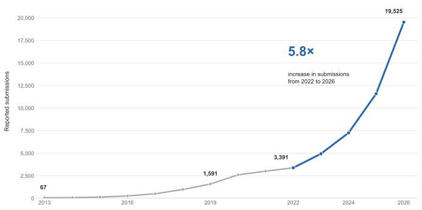
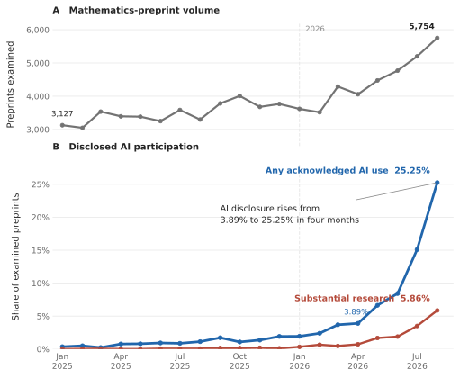

ICLR grew from 67 conference-track submissions in 2013 to 19,525 valid, format-compliant submissions in 2026, while the share of mathematics preprints in Epoch AI’s sample acknowledging AI use rose from 3.89% in April 2026 to 25.25% in August. The article examines whether candidate research is scaling faster than the institutions and expert attention required to evaluate, verify, and assimilate it.
When producing a paper becomes cheaper than evaluating one
Scientific production has historically been constrained by the cost of doing the work that precedes publication: finding a tractable question, reconstructing the relevant literature, developing theory or experiments, writing and debugging code, analyzing results, preparing figures, checking arguments, and turning the result into a manuscript that other researchers can inspect. Generative AI does not eliminate these activities, nor does it make their successful completion automatic, but it can reduce the marginal cost of several of them at once. That distinction matters because scientific institutions were largely designed for a world in which producing a plausible research artifact was itself an expensive filter. When the upstream filter becomes more permissive, pressure moves downstream toward review, verification, reproduction, selection, and attention.
ICLR provides a particularly clear empirical case because its growth is documented across both its early history and its current review process. An official opening presentation from ICLR 2016 reports 67 conference-track submissions in 2013, 87 in 2014, 143 in 2015, and more than 265 in 2016.1 By 2025, the conference reported 11,603 submissions, and its 2026 fact sheet records 19,525 submissions, of which 5,357 were accepted; the same document states that this represented 7,922 additional submissions in a single year.23 The 2026 retrospective gives the more precise review-process denominator: 19,525 valid, format-compliant submissions entered the process, 779 were desk rejected and 5,042 were withdrawn, while 13,763 ultimately received an accept-or-reject decision based on 76,139 reviews from 18,054 participating reviewers.4
Those numbers describe the production of candidate research rather than the accumulation of scientific knowledge. A submission shows that a research group has produced an artifact sufficiently developed to enter a conference evaluation process; it does not establish that the artifact is correct, novel, reproducible, important, or ultimately useful. This article therefore uses research explosion in a deliberately bounded sense: a sustained increase in the supply of research artifacts and claims seeking evaluation, large enough to place growing pressure on the institutions and expert attention required to validate, prioritize, reproduce, interpret, and assimilate them. The definition separates an observable phenomenon, the growth of candidate research output, from the much stronger proposition that reliable scientific knowledge is increasing at the same rate.
The distinction has become operational rather than merely conceptual. ICLR’s 2027 program chairs describe their new submission rules as effective rate-limits and state that the purpose is partly to focus scarce reviewer attention on work likely to matter.5 The author guidelines prohibit any author from appearing on more than twenty papers, generally permit at most one submission whose author group contains no eligible reciprocal reviewer, and impose reviewing obligations on authors appearing on three or more papers.6 These rules do not prove that AI caused the growth. They do establish that a major machine-learning conference now treats the relationship between submission supply and evaluation capacity as an explicit institutional constraint.
AI enters this argument through a second body of evidence. Epoch AI’s current dataset examines mathematics-primary arXiv preprints and classifies acknowledged AI use into substantial research, research assistance, writing, code and computation, literature review, and formalization.7 In April 2026, 158 of 4,058 examined mathematics preprints acknowledged AI use, or 3.89%; by August the count was 1,453 of 5,754, or 25.25%. The stricter substantial-research category increased from 29 papers, or 0.71%, in April to 337 papers, or 5.86%, in August.8 Epoch explicitly cautions that these are voluntary disclosures, so the observed trend reflects changing disclosure behavior as well as changing AI use; its classification also cannot independently establish that an acknowledged AI contribution was correct or scientifically decisive.
The thesis that follows is consequently narrower than AI is causing a publication explosion. The hard evidence establishes three things: research-artifact production is expanding rapidly at ICLR; acknowledged AI participation is increasing rapidly in a separate scientific domain; and ICLR itself reports operational consequences from LLM use in submissions and reviews. The hypothesis developed in the rest of the article is that AI can accelerate a structural inversion already visible in these data: candidate generation becomes cheaper and more scalable, while credible evaluation, independent verification, significance assessment, and human attention remain comparatively scarce.
From 67 submissions to a system-wide surge
The statistical unit matters. ICLR did not grow from 67 published papers in 2013 to 19,525 published papers in 2026; it grew from 67 conference-track submissions to 19,525 valid, format-compliant submissions entering the 2026 review process. A submission is the appropriate quantity for the argument developed here because it measures demand placed on the evaluation system before selection has converted that supply into accepted research. With that qualification, the scale change is extraordinary: the reported submission volume increased by a factor of approximately 291 in thirteen conference cycles.
The early official record reports 67 conference-track submissions in 2013, 87 in 2014, 143 in 2015, and more than 265 in 2016.9 The available annual series then rises to 507 in 2017, 981 in 2018, and 1,591 in 2019, before official program records report 2,604 full submissions in 2020, 3,014 in 2021, 3,391 in 2022, and 4,938 in 2023.10111213 The next three observations are 7,262 in 2024, 11,603 in 2025, and 19,525 valid, format-compliant submissions in 2026.1415 Historical counting conventions are not perfectly uniform. The earliest figures refer to conference-track submissions, the 2020–2021 retrospective reports full submissions, and the 2026 retrospective counts valid, format-compliant submissions. The series should therefore be interpreted as a reconstruction of reported conference volume rather than as a fully standardized longitudinal statistic.
The long-run curve establishes something that is easy to lose when concentrating on the generative-AI period: ICLR’s expansion began long before ChatGPT or contemporary general-purpose LLMs. The recent acceleration is nevertheless different in absolute scale. From the official counts, submissions increased by 2,324 between 2023 and 2024, by 4,341 between 2024 and 2025, and by 7,922 between 2025 and 2026, corresponding respectively to annual increases of 47.1%, 59.8%, and 68.3%. The final increment alone, 7,922 additional submissions in one year, is approximately 118 times the entire reported submission volume of ICLR 2013. The issue is therefore not merely that a small conference became a large one; it is that increasingly large percentage increases are being applied to an increasingly large base.
ICLR is not an isolated case. Other major AI and adjacent conferences report abrupt increases, although their accounting systems differ enough that the observations should not be merged into a synthetic cross-conference growth rate. NeurIPS reports that its Main Program grew from 9,467 submissions in 2020 to 21,575 in 2025, an increase of 127.9% in five years.16 CVPR reports 13,008 submissions in 2025, 13% more than in 2024.17 ACL’s executive committee reported 8,340 submissions for ACL 2025, 73% more than the previous year; its later program-chair accounting, reflecting the mechanics of ACL Rolling Review, records 8,360 unique submissions across the relevant December 2024 and February 2025 ARR cycles, of which 5,501 were ultimately committed to ACL.1819 AAAI provides perhaps the most striking recent example: its 2026 opening presentation reports 30,948 total submissions against 15,532 for AAAI-25, almost exactly a doubling in one cycle, although the accompanying plot identifies these as abstract-stage submissions; a subsequent process report states that almost 29,000 Main Technical Track papers were submitted and roughly 23,000 remained under review after policy-compliance filtering.20
| Venue | Reported comparison | Change | Important denominator qualification |
|---|---|---|---|
| ICLR | 11,603 (2025) → 19,525 (2026) | +68.3% | 2026 figure is valid, format-compliant submissions |
| AAAI | 15,532 (2025) → 30,948 (2026) | +99.3% | Official opening slide plots abstract-stage submissions; later full-paper count is almost 29,000 |
| NeurIPS Main Program | 9,467 (2020) → 21,575 (2025) | +127.9% | Five-year interval, not annual growth |
| CVPR | 13,008 submissions in 2025 | +13% YoY | Main technical-program submissions |
| ACL | 8,340 reported for 2025 | +73% YoY | ARR is a multi-stage rolling-review system; final accounting gives 8,360 unique ARR submissions and 5,501 conference commitments |
The AAAI distinction illustrates why apparently simple submission numbers require care. Its conference-opening material places 30,948 beside 15,532 and labels both as total submissions, but the figure itself tracks abstract submissions; the later review-process report gives almost 29,000 Main Technical Track submissions and approximately 23,000 compliant papers actually under review. These are all legitimate measures of successive stages in a submission funnel, but they are not interchangeable. The same principle explains why this article should not construct a single ranking of conferences by raw volume.
The stronger evidence for a common institutional phenomenon comes from what the conferences have had to do in response. NeurIPS explicitly states that rising submission volume makes it harder to recruit enough qualified reviewers, area chairs, and senior area chairs and can make review noisier; for 2025 it reports 20,518 reviewers, 1,663 area chairs, and 199 senior area chairs supporting 21,575 Main Program submissions.21 AAAI states even more directly that reviewing cost does not scale linearly with submissions and that, at tens of thousands of papers, the process approaches limits in storage, compute, workflow infrastructure, and, most importantly, qualified reviewer time.22 CVPR changed its reviewer policy in response to what it describes as a dramatic increase in submissions, requiring qualified authors to participate in review; ACL Rolling Review subsequently adopted a similar requirement, first requiring a nominated author to perform reviews and then extending the obligation to all qualified authors.2324 ICML 2025 likewise introduced reciprocal reviewing, requiring each submission, subject to exemptions, to designate a qualified author as a reviewer and imposing additional reviewing obligations on authors appearing on four or more submissions.25 These independent institutional responses matter because they show that the growth is not merely visible on plots: it is already changing the architecture of peer review.
ICLR itself provides a quantitative example of the mismatch between the two sides of that system. Its 2025 and 2026 fact sheets report reviewer pools of 18,325 and 21,674 respectively. Submission volume therefore rose 68.3% while the reported reviewer pool rose only 18.3%.2627 The later 2026 retrospective uses a narrower realized-participation denominator and records 76,139 completed reviews from 18,054 participating reviewers for 13,763 papers that reached an accept-or-reject decision.28 Those figures correspond to approximately 5.53 recorded reviews per decision-reaching paper and 4.22 reviews per participating reviewer. They do not measure review quality or workload distribution, but they expose the scale of the evaluation process that must grow behind the submission curve.
The phenomenon is also visible before research reaches conferences or journals. Across all subject areas, arXiv received 155,866 submissions in 2019 and 284,486 in 2025, an increase of 82.5% in six years, corresponding to a compound annual growth rate of approximately 10.5%.29 That aggregate conceals substantial heterogeneity. To avoid inflating categories through cross-listing, the following comparison uses the first number in each official arXiv annual total, namely the number of articles assigned to that archive, and excludes the separately reported cross-list count.30
| arXiv top-level archive | 2019 primary articles | 2025 primary articles | Increase | CAGR, 2019–2025 |
|---|---|---|---|---|
| Computer Science | 47,408 | 136,823 | +188.6% | 19.3% |
| Electrical Engineering and Systems Science | 6,085 | 12,613 | +107.3% | 12.9% |
| Quantitative Biology | 1,853 | 3,229 | +74.3% | 9.7% |
| Statistics | 5,451 | 8,101 | +48.6% | 6.8% |
| Physics archive | 13,244 | 17,436 | +31.7% | 4.7% |
| Mathematics | 37,356 | 46,226 | +23.7% | 3.6% |
physics archive shown here is a particular top-level archive and should not be interpreted as all physics on arXiv, which also includes separate archives such as astrophysics, condensed matter, high-energy physics, nuclear theory, and quantum physics.
The differences are analytically important. Computer Science did not merely increase in line with the repository: its primary-article count rose from 47,408 to 136,823, adding 89,415 papers per year to the annual flow and nearly tripling in six years. Electrical Engineering and Systems Science more than doubled. Quantitative Biology rose by roughly three quarters. Statistics grew by almost half. Mathematics and the specific arXiv physics archive grew more slowly over the same full-year interval. It would therefore be misleading to describe the research explosion as a uniform multiplicative increase across science; the growth is strongly field-dependent, with the largest expansion concentrated in domains closely connected to computation, machine learning, and rapidly scaling digital research workflows.
Nor can the arXiv curves by themselves identify the cause. Repository usage can increase because the underlying research community grows, because a field becomes more willing to use preprints, because publication norms change, because interdisciplinary work migrates between categories, or because individual researchers become more productive. The statistics measure candidate artifacts entering a public research channel, not latent scientific productivity. Their relevance is that they independently reproduce the direction of the conference evidence: the amount of material seeking expert attention is increasing rapidly, and in some fields it is doing so at rates that compound into very large absolute increments.
The distinction also prevents an anachronistic causal story about generative AI. ICLR had already increased from 67 submissions in 2013 to 1,591 in 2019, while arXiv was already receiving 155,866 submissions per year by 2019. Generative AI therefore cannot explain the origin of the long-run research-output expansion. What needs explanation is whether it is now changing the slope, the composition, or the per-researcher production function of a system that was already growing. That is a substantially stronger question than observing that publication counts and AI adoption happen to rise at the same time.
For the same reason, ICLR 2027 should not yet be appended to the historical series. The abstract deadline was September 18, 2026 and the full-paper deadline was September 25.31 As of September 27, ICLR’s official conference pages do not yet publish a final full-submission or valid-submission count directly comparable with the 19,525 valid, format-compliant submissions reported for 2026. Circulating figures based on abstract registrations, submission identifiers, or other preliminary denominators should therefore not be treated as a 2027 observation in the longitudinal series. A new point belongs on the graph only when an official comparable denominator becomes available.
The empirical picture is consequently broader than the original ICLR curve but also more constrained in what it proves. ICLR has expanded nearly 300-fold since its first conference; AAAI almost doubled its reported abstract-stage volume in one cycle; NeurIPS more than doubled its Main Program submissions between 2020 and 2025; ACL reported a 73% annual increase; and primary Computer Science articles on arXiv nearly tripled between 2019 and 2025. At the same time, the relevant institutions are imposing reciprocal-review requirements, recruiting reviewer pools measured in the tens of thousands, filtering larger fractions of submissions, and explicitly discussing evaluation capacity. These facts establish a rapid expansion in the supply of research artifacts. They do not establish that AI caused it. The next question is therefore narrower and empirically separable: whether AI can now be observed entering the production process itself.
AI enters the research production function
The conference series establish that the supply of candidate research is expanding, but they do not reveal how those papers were produced. A conference can receive more submissions because there are more researchers, because the field has expanded, because researchers submit more papers per person, because production tools have improved, or because several of these effects operate simultaneously. Epoch AI’s analysis of mathematics preprints provides a different observable: instead of inferring AI involvement from aggregate publication counts, it searches the research artifacts themselves for explicit acknowledgments of AI use.32
The distinction is important because Epoch is not estimating AI-written text or attempting to detect model-generated prose. Its dataset considers papers whose primary arXiv classification is mathematics, assigns each paper to its first-submission date, ignores secondary categories for field assignment, and searches the manuscript for explicit acknowledgments of AI use. Papers containing candidate AI-related terms are classified by use case into substantial research, research assistance, writing, code and computation, literature review, and formalization. Epoch applies stronger agreement requirements to the research categories than to ordinary assistance and reports a 93% human agreement rate in its audit of the relevant research classifications.33 The resulting statistic is therefore best interpreted literally: it measures disclosed AI participation in mathematics preprints, not latent AI use and not AI-generated research.
The monthly series shows two changes occurring at very different scales. Mathematics-preprint volume itself increased substantially. Epoch examined 3,127 mathematics preprints from January 2025, 3,618 from January 2026, 4,058 from April 2026, and 5,754 from August 2026. Over the same observations, however, disclosed AI participation rose much faster. Only 11 January 2025 papers acknowledged AI use for any purpose, representing 0.35% of the examined papers. The corresponding figure was 70 papers, or 1.93%, in January 2026; 158, or 3.89%, in April; 402, or 8.43%, in June; 785, or 15.10%, in July; and 1,453, or 25.25%, in August.34
The narrower category in which AI is credited with a contribution at approximately the level of substantive research shows the same acceleration from a much lower base. Epoch records 12 such papers in January 2026, 29 in April, 75 in May, 90 in June, 182 in July, and 337 in August. Relative to the monthly denominator, the disclosed substantial-research share therefore rose from 0.33% in January to 0.71% in April, 1.68% in May, 1.89% in June, 3.50% in July, and 5.86% in August.35 In other words, the striking 25% headline should not be read as saying that AI performed substantive mathematical research in one quarter of new mathematics papers. The observed August decomposition is approximately one quarter acknowledging AI for some purpose and roughly one in seventeen acknowledging a contribution that Epoch classifies as substantial research.

The matched-period comparison separates growth in the underlying mathematics corpus from growth in disclosed AI participation more clearly. Epoch examined 26,620 mathematics preprints submitted from January through August 2025 and 35,678 during the corresponding eight months of 2026. The underlying preprint flow therefore increased by 34.0%. Papers acknowledging AI use increased over the same matched periods from 185 to 3,407, that is an 18.4-fold increase, while papers acknowledging substantial-research contributions increased from 9 to 768, an 85.3-fold increase.36
| Measure | Jan.–Aug. 2025 | Jan.–Aug. 2026 | Change |
|---|---|---|---|
| Mathematics preprints examined | 26,620 | 35,678 | +34.0% |
| Papers acknowledging any AI use | 185 | 3,407 | 18.4× |
| Share acknowledging any AI use | 0.695% | 9.549% | +8.85 percentage points |
| Papers acknowledging substantial AI research | 9 | 768 | 85.3× |
| Share acknowledging substantial AI research | 0.034% | 2.153% | +2.12 percentage points |
These quantities should not be collapsed into a single growth statistic. The 34% increase concerns the number of mathematics research artifacts entering arXiv. The 18.4-fold and 85.3-fold increases concern the prevalence of explicit AI acknowledgments within those artifacts. Their simultaneous movement is empirically important, but arithmetic alone cannot determine how much of the first increase was produced by the second. If mathematics-preprint output would have increased by 34% even in the absence of generative AI, the two trends could coexist without a large productivity effect. Conversely, if AI allowed existing researchers to complete projects that would otherwise have remained unfinished, aggregate counts would understate its causal role unless those counterfactual projects could somehow be observed.
Epoch nevertheless provides evidence against one particularly simple compositional explanation: that the increase is driven mainly by a new population of authors entering mathematics with unusually high AI dependence. Its analysis defines a subset of papers containing at least one author with an established pre-2023 mathematics-publication history and finds that the monthly rate of AI acknowledgment for this population remains within 1.5 percentage points of the overall rate. The substantial-research series behaves similarly.37 This does not prove that AI raises the productivity of established mathematicians, but it shows that rapidly rising disclosure is not confined to a peripheral population of newly appearing authors.
The use-case taxonomy matters because AI use does not correspond to a single production input. Epoch distinguishes substantial research, where the acknowledgment credits AI with generating important results or making substantial proof contributions; research assistance, including proof ideas, exploratory assistance, checking, examples, or improvements that do not meet the stronger threshold; formalization; code and computation; literature review; and writing, including editing, drafting, translation, and related manuscript work.38 These activities intervene at different points in the research production process and therefore affect different cost components.
A writing assistant can reduce the cost of converting completed work into a readable manuscript without altering the mathematical result. Literature assistance can reduce the search cost involved in reconstructing prior work and determining whether a proposed result is already known. Code generation can lower the cost of computational experiments, symbolic calculations, numerical searches, or data processing. Formalization assistance can reduce the labor needed to translate an informal argument into a proof-assistant-compatible representation. Research assistance can alter the exploratory loop itself by generating examples, suggesting proof strategies, checking intermediate arguments, or exposing failed approaches. Substantial-research use reaches furthest upstream because the model is explicitly credited with contributing materially to the mathematical result.
The taxonomy gives a more precise meaning to the claim that AI is entering the research production process. The relevant activities should not, however, be treated as independent additive cost terms. Literature search can change the reasoning path; reasoning determines which computations or experiments are worth performing; computational results can invalidate an argument and force a return to search; formalization can expose gaps that require new reasoning; and writing itself can reveal ambiguities or missing evidence. AI can intervene at several of these points simultaneously, with effects that propagate through the rest of the workflow.
%%{init: {"theme": "neo", "look": "handDrawn", "layout": "elk"}}%%
flowchart TD
Q["Research question<br/>or conjecture"]
S["Literature search<br/>prior work, novelty,<br/>relevant evidence"]
R["Reasoning and exploration<br/>hypotheses, proof strategies,<br/>experimental design"]
C["Computation and experimentation<br/>code, simulation, data analysis,<br/>numerical or symbolic search"]
F["Formalization and checking<br/>proof structure, consistency,<br/>machine-checkable representations"]
W["Writing and synthesis<br/>argument, figures,<br/>interpretation, exposition"]
O["Coordination<br/>collaboration, task allocation,<br/>integration of contributions"]
A["Candidate research artifact"]
Q --> S
S --> R
R --> C
R --> F
C --> W
F --> W
O --> R
O --> C
O --> W
W --> A
C -.->|unexpected result or failure| R
C -.->|new evidence| S
F -.->|gap or inconsistency| R
W -.->|missing support or ambiguity| S
W -.->|argument needs revision| R
AI["AI assistance<br/>can reduce effort or expand capability<br/>at multiple stages"]
AI -.-> S
AI -.-> R
AI -.-> C
AI -.-> F
AI -.-> W
AI -.-> O
classDef process fill:#EAF3FF,stroke:#5B8DB8,color:#111;
classDef output fill:#EAF8EA,stroke:#5A9B5A,color:#111;
classDef ai fill:#FFF2D9,stroke:#B8872E,color:#111;
class Q,S,R,C,F,W,O process;
class A output;
class AI ai;
The important point is therefore not that AI subtracts a fixed amount from a scalar cost of research. Its effect depends on where it enters the workflow and how changes at one stage propagate into others. Assistance with writing may primarily reduce the cost of converting completed work into a manuscript. Literature assistance can alter the search space before substantive work begins. Code generation can make additional computational experiments feasible. Formalization assistance can expose errors or missing assumptions and thereby redirect reasoning. Research assistance can intervene further upstream by proposing examples, proof strategies, hypotheses, or experimental designs.
None of these effects requires an autonomous system capable of executing an entire research project. A productivity effect can arise when AI makes several interacting stages cheaper or more capable, allowing projects that would previously have remained incomplete, prohibitively expensive, or unexplored to reach the candidate-artifact stage. Conversely, assistance concentrated mainly in writing and presentation can increase the throughput of visible research artifacts while having a much smaller effect on the production of new scientific results. This is why the binary variable used AI is too coarse to identify the mechanism through which AI affects research productivity.
There are, however, substantial measurement limitations. First, Epoch observes voluntary disclosure. Undisclosed use is invisible, and changing norms can increase acknowledgments even if underlying use changes more slowly. Second, the classification itself is model-assisted and therefore contains classification error, notwithstanding the human audit and cross-model validation. Third, Epoch uses the most recent manuscript text available to its data pipeline while assigning papers to their first arXiv submission date; an AI acknowledgment added during a later revision can therefore be attributed to the paper’s original submission month. Fourth, the methodology deliberately excludes some indirect signals of AI use, for example, material appearing only in source comments, because the objective is to measure explicit acknowledgment rather than infer hidden use.3940
These limitations make the direction of inference asymmetric. The data strongly support the proposition that explicitly acknowledged AI participation in mathematics research artifacts increased extremely rapidly during 2026. They do not support interpreting 25.25% as the true fraction of mathematics research using AI, because undisclosed use could make the true fraction higher while changing disclosure norms could make growth in the observed fraction exceed growth in latent use. Nor does the 5.86% August substantial-research share independently establish that AI correctly produced a major mathematical contribution in every classified paper: the classification describes what the authors credit the system with doing, not an external replication of that contribution.
Most importantly, the data do not yet identify the causal productivity effect. Doing that would require a different research design: for example, longitudinal author-level data measuring output before and after AI adoption, comparable non-adopters or differential access to capable systems, controls for field and career stage, and outcome measures extending beyond the number of submitted manuscripts to correctness, novelty, acceptance, citations, formal verification, or later reuse. Conference and arXiv counts can establish the scale of output; acknowledgment data can establish that AI is increasingly present in the process. Neither, by itself, supplies the missing counterfactual of how much research the same population would have produced without AI.
What the Epoch series does establish is narrower but still consequential. During the same eight-month calendar interval in which mathematics-preprint volume was 34% higher than one year earlier, disclosed AI participation increased by more than an order of magnitude and disclosed substantial-research participation by almost two orders of magnitude. The increase extends to established authors and spans several stages of research production rather than manuscript writing alone. AI has therefore moved from a hypothetical productivity technology to an observable input into real mathematical research. The unresolved question is no longer whether that input exists, but whether the rapidly increasing supply of research artifacts is accompanied by a proportionate increase in results that survive verification, novelty assessment, reproduction, and scientific assimilation.
Why more papers do not necessarily mean more knowledge
The preceding evidence concerns the production of research artifacts. Scientific knowledge is a different object. A manuscript can contain a correct result that is already known, a novel result that later proves false, a technically valid contribution whose assumptions make it scientifically unimportant, or an important claim whose evidentiary basis is too weak to support it. Conversely, a result may acquire much of its scientific value only after publication, through independent reproduction, formal verification, reuse in subsequent work, incorporation into theory, or successful application. Counting papers therefore measures the throughput of one stage of science; it does not directly measure the accumulation of reliable knowledge.
That distinction becomes more consequential when the cost of producing candidate artifacts falls. Historically, substantial work was required before a manuscript could even enter the evaluation system: reconstructing the literature, developing an argument or experimental design, implementing the relevant software, gathering or generating data, debugging, performing analysis, preparing figures, and writing a coherent paper. These activities were never a reliable filter for scientific quality: resources, institutional position, language, and access also shaped who could produce papers. They nevertheless imposed a significant cost on producing additional candidate claims.
AI can reduce several components of that cost simultaneously. The result need not be a world in which machines autonomously generate complete papers. A smaller change is sufficient: if literature search, coding, symbolic manipulation, exploratory reasoning, formalization, editing, and presentation all become cheaper, then projects that previously remained below the threshold for completion can become economically feasible. The supply of candidate research can consequently increase even when the number of researchers, available funding, experimental facilities, and working hours change much more slowly.
The corresponding downstream operations do not necessarily scale at the same rate. Establishing that a claim deserves to enter the durable scientific record may require several distinct judgments: whether the argument is internally correct, whether the result is genuinely new, whether an experiment measures what it claims to measure, whether the analysis survives alternative specifications, whether the work can be reproduced, whether apparently independent evidence is actually independent, whether the result generalizes beyond the reported setting, and whether it changes what is worth believing or doing. Some of these operations are partly automatable; none is made unnecessary merely because producing the manuscript became cheaper.
It is therefore useful to distinguish artifact abundance from epistemic abundance. Artifact abundance means that the research system can generate more manuscripts, preprints, proofs, experiments, datasets, benchmarks, software implementations, and claims. Epistemic abundance would require a corresponding increase in reliable, non-redundant, scientifically assimilated knowledge. The former can increase much faster than the latter.
A minimal model makes the distinction explicit. Let N denote the number of candidate contributions produced during some period. For candidate i, let q_i represent the probability that it survives the relevant validation process: correctness checking, novelty assessment, reproduction where appropriate, and eventual scientific scrutiny. Then a conceptual expected count of contributions surviving validation can be written as
K = \sum_{i=1}^{N} q_i. \tag{1}
This equation is deliberately not a bibliometric proposal. Scientific knowledge is not literally a scalar, and the probabilities q_i are generally neither observable nor stationary. The purpose of the expression is to expose an assumption hidden in raw publication counts. Treating N as if it were itself accumulated knowledge implicitly assumes that validation quality remains approximately constant as volume changes. If the number of candidates rises while congestion, reduced scrutiny, duplication, weak provenance, or insufficient reproduction lowers the average probability that a candidate survives meaningful validation, N can grow much faster than K.
That possibility becomes clearer if
\bar{q} = \frac{1}{N}\sum_{i=1}^{N} q_i,
so that
K = N\bar{q}. \tag{2}
A doubling of candidate output doubles expected validated output only if the average validation-survival term \bar{q} remains unchanged. If evaluation capacity is fixed and increased volume reduces the amount of qualified attention available per candidate, the two quantities need not move proportionally. Conversely, better tools for verification, reproduction, or formal checking could cause \bar{q} to rise, allowing validated knowledge to grow faster than manuscript volume. The framework is therefore symmetric: it does not assume that more papers imply worse science. It merely prevents that question from being answered by paper counts alone.
Correctness is itself insufficient because scientific contributions can be redundant. Suppose two papers independently prove exactly the same theorem, or hundreds of benchmark studies explore nearly identical model variations while producing little new generalizable information. Every paper may be technically correct, but the incremental information added by the later papers can be small. Let w_i denote the incremental scientific value of candidate i conditional on what the research community already knows. A second conceptual quantity is then
K^\ast = \sum_{i=1}^{N} q_i w_i. \tag{3}
Again, neither q_i nor w_i should be interpreted as operational scores. The equation identifies two independent reasons why artifact counts and knowledge can diverge: candidates can fail validation, and validated candidates can add very different amounts of non-redundant information. A research system can consequently produce many more correct artifacts while adding comparatively little new knowledge, or produce relatively few artifacts whose scientific value is unusually large.
This distinction is especially important in mathematics because correctness and significance can be separated unusually cleanly. A formally verified proof can provide extremely strong evidence that a theorem follows from stated assumptions inside a formal system. Yet verification alone does not establish that the formal statement corresponds to the intended informal theorem, that its assumptions are the right ones, that the result was previously unknown, that it illuminates an important structure, or that mathematicians should allocate scarce attention to understanding it. If automated theorem proving eventually makes correct proofs dramatically more abundant, the bottleneck does not disappear. It moves toward theorem selection, formalization quality, conceptual compression, interpretation, provenance, and mathematical significance.
The same structure appears in empirical science, although validation is less reducible to formal checking. A statistical analysis can be internally correct while using a poorly defined construct. A model can achieve a benchmark improvement that disappears under distribution shift. An experiment can be reproducible but address an unimportant question. A result can be novel while depending on an unrecognized confounder. Replication, robustness analysis, external validity, causal identification, measurement validity, and theoretical interpretation therefore remain separate dimensions of scientific value even when AI substantially automates coding, analysis, and manuscript preparation.
AI can also reduce some of these downstream costs. Formal proof assistants can mechanically verify derivations; code execution can test whether reported software runs; statistical tools can identify inconsistencies; automated reference systems can detect nonexistent citations; agents can reproduce computational workflows; and model-assisted reviewing can help locate missing controls or contradictory claims. It would therefore be incorrect to model AI as affecting generation while leaving verification technologically frozen. The relevant question is comparative: does the effective capacity for trustworthy evaluation grow at least as fast as the capacity to produce candidate claims?
This comparative formulation avoids an unnecessarily pessimistic conclusion. If AI simultaneously lowers the cost of candidate generation and makes verification, reproduction, and formal checking substantially cheaper, scientific productivity can rise at both stages. The problematic regime arises when generation scales more rapidly than the mechanisms that establish correctness, novelty, independence, and significance. Under that asymmetry, additional output imposes increasing demands on the parts of the research system that remain scarce.
There is also a second-order effect. As candidate production becomes easier, the visible artifact carries less information about the amount or type of work that produced it. In a high-cost production regime, a complete manuscript was at least weak evidence that substantial human effort had been invested before submission. That inference was never equivalent to quality, but it had some filtering value. When sophisticated prose, code, experiments, formal derivations, figures, and literature synthesis can all be produced with much lower marginal effort, the surface quality of a paper becomes an increasingly weak proxy for the reliability of the process behind it.
Provenance therefore acquires greater epistemic importance. Knowing whether a result was generated through independent experimental replication, produced by several agents sharing the same underlying model, checked by a formal proof assistant, derived from the same dataset as earlier work, or reviewed using another model from the same technological lineage can matter as much as the number of apparent confirmations. What needs to scale is not simply the number of evaluations but the amount of genuinely independent evidence they contribute.
The emerging scarcity is consequently not knowledge in the abstract but credible discrimination among candidate claims. When generation is expensive, producing another plausible result is itself a major bottleneck. When candidate generation becomes abundant, scientific value shifts toward determining which results are correct, which are genuinely new, which are independent, which matter, and which deserve to consume further experimental, computational, or human attention. More papers can still produce more knowledge; indeed, a sufficiently effective AI-assisted research system should do exactly that. The point is that the relationship is mediated by validation, redundancy, significance, and assimilation rather than guaranteed by the number of artifacts produced.
The economics of generation and verification
The preceding distinction between candidate artifacts and validated knowledge can be restated as a resource-allocation problem. Scientific production has at least two coupled stages. Upstream, researchers consume time, compute, laboratory resources, data, and institutional support to produce candidate contributions. Downstream, other researchers and institutions consume additional resources to determine whether those contributions are correct, novel, significant, reproducible, and sufficiently well supported to enter a trusted scientific record. A technological change becomes institutionally disruptive when it changes the relative scaling of those two stages.
Let g denote the average resource cost of producing one additional candidate contribution, measured in some common unit such as researcher-hours or their opportunity-cost equivalent, and let G denote the total resource budget available for candidate generation. A minimal production relation is then
N_g = \frac{G}{g}, \tag{4}
where N_g is the number of candidate contributions that the available generation resources could support. The equation is not intended as a literal production function for science: projects differ enormously in difficulty, researchers are heterogeneous, and research output is stochastic. Its purpose is to isolate the effect of a change in marginal cost. Holding G fixed, reducing g expands the set of projects that can be completed.
AI can act on both terms. It can increase the effective generation budget by augmenting what a researcher can accomplish during a fixed working period, and it can lower the resource cost of particular operations such as literature reconstruction, software development, symbolic manipulation, data processing, formalization, editing, translation, and presentation. Epoch’s disclosure categories provide empirical evidence that current systems are already being used across several of these components rather than only for manuscript prose.41 None of this requires an autonomous system capable of executing an entire research project. A reduction in several intermediate costs is sufficient to increase the number of projects that cross the threshold from possible to worth completing.
Evaluation has a separate budget. Let V be the amount of qualified evaluation resource available during a review period and let v be the average amount required to evaluate one candidate at the intended standard. Evaluation capacity is then
N_v = \frac{V}{v}. \tag{5}
Unlike the earlier conceptual quantities for knowledge, this expression has a straightforward operational interpretation. If reviewers collectively have 100,000 hours available and the desired evaluation process consumes an average of ten qualified hours per candidate, the corresponding capacity is approximately 10,000 candidates. The actual system is more complicated because papers require different expertise and effort, reviewer availability is heterogeneous, assignments are constrained, and area-chair and administrative resources introduce additional bottlenecks, but the basic conservation relation remains: finite qualified attention can support only a finite amount of evaluation at a specified depth.
This permits a useful definition of evaluation load:
\lambda = \frac{N}{N_v} = \frac{Nv}{V}, \tag{6}
where N is the number of candidates entering the evaluation system. When \lambda \leq 1, available capacity is at least sufficient in aggregate to evaluate all candidates at the assumed resource level. When \lambda > 1, that combination of candidate volume, evaluation effort, and available capacity is infeasible. Something must change: V must increase, v must decrease, N must be reduced, the process must take longer, or some combination of these adjustments must occur.
This formulation clarifies the significance of recent conference policies. ICLR states explicitly that rapid submission growth has begun to strain its review system and that its new limits are intended to preserve a fair and informative review process.42 Its 2027 policies attack different variables in the capacity equation. Requiring qualifying authors to contribute reviews attempts to increase V. Limiting authors to twenty submissions and generally permitting only one submission per author group without an eligible reciprocal reviewer constrains N. Desk rejection removes candidates before they consume the full downstream review budget. These policies are not arbitrary procedural changes; they are alternative controls on the same resource inequality.
The Program Chairs make the allocation objective unusually explicit. Their explanation of the 2027 policy identifies one goal as focusing scarce reviewer attention on work likely to matter, while the author guidelines state directly that submission growth is straining review capacity.4344 The reviewer instructions reveal why the relevant resource cannot be approximated merely by counting reviewer accounts: reviewers are expected to read papers carefully, check arguments in sufficient detail, contextualize claims in the literature, participate in discussion with authors and other reviewers, and provide a recommendation usable by area chairs.45 The scarce input is therefore qualified attention, not generated review text.
Generation and evaluation need not become unbalanced merely because AI reduces g. AI can also reduce v. Automated execution can test whether submitted code runs; proof assistants can verify formal derivations; statistical systems can detect inconsistencies; reference checkers can expose nonexistent citations; agents can reproduce computational workflows; and language models can assist reviewers in locating claims, comparing versions, or organizing their own analyses. If the cost of evaluation falls at least as rapidly as the cost of generation, increasing candidate supply need not produce increasing congestion.
The institutional question is therefore fundamentally about relative rates of technological improvement. Let g_t and v_t denote generation and evaluation costs at time t. A useful conceptual ratio is
\rho_t = \frac{v_t}{g_t}, \tag{7}
provided both quantities are expressed in comparable resource units. If AI reduces g_t much faster than v_t, then \rho_t rises: evaluating a candidate becomes more expensive relative to producing it. If both decline proportionally, the relative structure of the system changes much less. If verification technology improves faster than generation technology, the bottleneck can move in the opposite direction.
The distinction between \rho and \lambda is important. The first describes the relative technology of the two activities; the second describes the actual congestion of an institution. A field can have a rising verification-to-generation cost ratio without an immediate review crisis if it can recruit more reviewers and increase V. Conversely, a conference can encounter \lambda>1 even without technological change if its research community expands rapidly enough to increase N. This is why conference submission counts alone cannot demonstrate that AI caused the review-capacity problem, even though AI may be changing the underlying economics.
There is also an externality that simple capacity accounting does not capture. Consider researcher i deciding whether to submit a candidate paper. Let b_i be the expected private benefit of submission, namely scientific visibility, career value, feedback, probability of publication, or simply the option value of entering the review process, and let c_i be the private cost of preparing and submitting it.
For the schematic inequalities that follow, assume that benefits and costs are expressed in a common opportunity-value unit. The model is not claiming that these quantities are directly observable or objectively commensurable in practice; the normalization is used only to expose the incentive structure.
The private decision threshold is approximately
b_i \geq c_i. \tag{8}
Submission, however, imposes downstream costs that the author does not individually bear: reviewer time, area-chair work, integrity screening, infrastructure, discussion, administration, and the opportunity cost created because the same attention cannot be allocated elsewhere. Let that external evaluation cost be e_i. A corresponding social-resource condition would need to consider
where b_i^{\ast} represents the broader expected scientific value rather than merely the author’s private return.
These equations are not intended to imply that conferences could calculate the true social value of papers, which is generally unknowable ex ante. They identify the incentive problem. Authors decide whether to submit primarily on the basis of costs and benefits that they experience directly, whereas much of the evaluation cost is imposed on other members of the research community. Peer review has therefore always contained a commons-like element: everyone benefits from access to an evaluation system whose capacity is produced by the uncompensated or indirectly compensated labor of many of the same researchers who consume it.
A fall in generation cost magnifies that externality. Suppose a project previously required enough additional work that b_i<c_i and was therefore not submitted. If AI reduces c_i sufficiently, the private inequality can reverse even though neither the scientific value of the project nor its downstream evaluation cost has changed. A larger population of marginal projects can consequently become rational to submit from the authors’ perspective while imposing additional demand on a review system whose qualified-attention budget has not increased proportionally.
This does not imply that cheaper-to-produce papers are worse papers. Lower production costs also make valuable projects feasible. Researchers can attempt riskier problems, test more hypotheses, conduct stronger robustness analyses, formalize results that previously remained informal, improve reproducibility, explore alternative explanations, or enter research despite language and implementation barriers. The same reduction in g expands the feasible set toward both high-value and low-value projects. The economic consequence is not declining quality as a mathematical necessity; it is an increase in the importance of selection.
Reciprocal reviewing can be understood as a partial attempt to internalize the review externality. ICLR 2027 requires authors appearing on three or more papers to serve as reviewers for at least six papers and generally requires every submission to include at least one qualified author registered to review at least three papers.46 The policy does not charge authors a monetary price for consuming review capacity. Instead, it couples consumption of the commons to contribution of one of its scarce inputs. In the notation above, high-volume participation is permitted partly on condition that the submitter contributes to V.
Submission quotas operate differently. They constrain N directly rather than attempting to expand V. This is economically significant because evaluation supply cannot necessarily be increased without bound. Reviewer expertise is specialized; inexperienced reviewers are not perfect substitutes for experienced ones; area chairs themselves require supervision capacity; and assigning more reviews can increase coordination costs. The ICLR Program Chairs’ decision to combine reciprocal reviewing with explicit submission limits implies that expanding evaluation labor alone is not regarded as sufficient to absorb arbitrary growth.
AI-assisted reviewing introduces another possible adjustment: reducing v. ICLR permits limited use of language models in review writing but requires disclosure, preservation of the reviewer’s original self-written assessment, and disclosure of relevant model interactions; hallucinated or misleading AI-generated material can trigger sanctions.47 The architecture of the policy is revealing. The conference allows automation to lower some costs of producing the review artifact while retaining a human source of accountable judgment. In economic terms, it attempts to reduce components of v without treating automatically generated text as an unrestricted substitute for the scarce resource embodied in V.
The reviewer guidelines reinforce the distinction by warning that language models make it easy to generate extremely long reviews containing many points that authors must then answer, even when those points have little bearing on the decision. Automation can therefore reduce the private cost of producing an evaluative artifact while increasing total system cost if it creates additional work for authors, reviewers, and area chairs. This is the evaluation-side analogue of the submission externality: cheaper artifact generation does not necessarily mean cheaper end-to-end evaluation.
A more complete representation of the system therefore separates four quantities:
\text{candidate supply} \sim \frac{G}{g}, \qquad \text{evaluation capacity} \sim \frac{V}{v}, \qquad \rho = \frac{v}{g}, \qquad \lambda = \frac{Nv}{V}. \tag{10}
The first describes what researchers can produce; the second what the evaluation system can process at a chosen standard; \rho describes the relative cost structure; and \lambda describes realized pressure on evaluation capacity. AI can affect every term. More researchers and more funding can increase G; research assistants can reduce g; reviewer-assistance systems can reduce v; reciprocal reviewing can increase V; and submission restrictions can reduce N. The empirical problem is to determine which effects dominate.
This framework also explains why the research explosion cannot be diagnosed from a publication curve alone. A rapidly increasing N is benign if V/v grows sufficiently quickly and validation quality is maintained or improved. It can even represent a major increase in scientific productivity. The structurally difficult regime occurs when the technologies and incentives governing candidate production scale faster than the mechanisms that establish reliability and significance.
The resulting scarcity is therefore relational rather than absolute. Science does not simply run out of reviewers because there are too many papers. It encounters a mismatch between the cost of placing another candidate claim into the system and the cost of giving that claim the amount of independent, qualified scrutiny that the institution considers sufficient. As AI lowers the first cost, the central economic question becomes whether it can also lower the second without degrading the independence, expertise, and accountability on which scientific evaluation depends.
Peer review as a scarce computational resource
The economics of generation and verification become concrete in peer review because the relevant resources can be observed, at least partially. ICLR 2026 received 19,525 valid, format-compliant submissions. The official retrospective reports 779 desk rejections, 5,042 withdrawals, and 13,763 papers ultimately receiving an accept-or-reject decision based on 76,139 reviews provided by 18,054 participating reviewers.48 The same retrospective reports 5,355 accepted papers and 8,408 rejected papers; this differs by two from the earlier ICLR 2026 fact sheet, which reported 5,357 acceptances, so the two official sources should not be treated as numerically identical snapshots of the process.4950
The resulting arithmetic is useful but easy to misinterpret. Dividing 76,139 reviews by 13,763 decision-reaching papers gives approximately 5.53 recorded reviews per paper, while dividing by 18,054 participating reviewers gives approximately 4.22 reviews per reviewer. Neither quantity measures the actual intellectual cost of peer review. Reviewers receive different numbers of assignments; papers differ radically in difficulty; some arguments can be checked quickly whereas others require reconstructing proofs, running code, reading supplementary material, or investigating prior work; reviewers possess different expertise; and area chairs perform additional coordination and judgment that review counts do not capture.
The natural resource unit is therefore not the review but qualified attention. If reviewer r devotes h_r hours of relevant expert effort during the conference cycle, the total gross attention supplied by reviewers is
H = \sum_{r=1}^{R} h_r. \tag{11}
ICLR does not report the h_r values, so H cannot be recovered from its public statistics. This is not merely a missing datum. Two reviews counted identically in the conference database can consume very different amounts of expert time and contain very different amounts of useful scrutiny. Review counts measure completed review artifacts; they do not measure epistemic work.
Even H would overstate usable capacity if treated as homogeneous. Peer review is not a pool of interchangeable labor. A specialist in optimization is not automatically a suitable reviewer for interpretability, reinforcement learning, computational biology, or a theorem requiring a particular mathematical background. Conflicts of interest further restrict feasible assignments, while reviewer load and availability constrain how many papers a qualified specialist can absorb. Peer review therefore resembles a heterogeneous scheduling problem more than a warehouse of fungible compute.
Let H_k denote available expert attention in research area k, and let D_k denote the attention required by submitted papers whose evaluation depends substantially on that expertise. A necessary capacity condition is
D_k \leq H_k \tag{12}
for every relevant specialization k. Aggregate capacity can consequently appear sufficient while a particular subfield remains overloaded. Ten thousand unused reviewer-hours in unrelated areas cannot compensate for a shortage of researchers capable of checking a difficult technical claim in a narrow specialty.
The real constraint is more general still because papers frequently require several forms of expertise simultaneously. A machine-learning paper can combine optimization theory, a specialized application domain, large-scale experimentation, statistical inference, and systems engineering. A correct assignment must therefore solve a matching problem under expertise, conflict-of-interest, workload, and timing constraints. Increasing the number of registered reviewers does not automatically increase effective capacity in proportion to headcount.
ICLR’s own workflow makes this multidimensional nature explicit. The 2027 reviewer guidelines ask reviewers not merely to produce text but to identify the question addressed by a paper, determine whether the approach is well motivated, assess whether the evidence supports the claims, evaluate theoretical or empirical correctness and scientific rigor, judge significance, interact with authors during discussion, read the other reviewers’ assessments, and revise their recommendation when warranted.51 Area chairs then integrate these reviews and discussions into decisions, while senior area chairs supervise the process. The evaluation system is therefore a pipeline of dependent judgments rather than a collection of independent text-generation tasks.
This distinction explains why simply recruiting more reviewers is an incomplete scaling strategy. ICLR’s 2025 fact sheet lists 18,325 reviewers, whereas its 2026 fact sheet lists 21,674, an increase of approximately 18.3%, while submissions increased from 11,603 to 19,525, or 68.3%.5253 These populations are not identical to the 18,054 reviewers who actually provided reviews in the later 2026 retrospective, so they should not be mixed into a single ratio. Taken within their own fact-sheet definition, however, they show that nominal reviewer supply grew much more slowly than submission demand.
There are only a small number of ways to restore balance when candidate demand grows faster than available expert attention. The conference can recruit more reviewers, increase the number of assignments per reviewer, reduce the amount of work expected for each review, remove more papers before full review, restrict incoming submissions, lengthen the review period, or improve the productivity of evaluation. Each choice changes a different property of the system, and several carry obvious trade-offs.
ICLR 2027 uses several simultaneously. Its author guidelines require authors appearing on three or more submissions to serve as reviewers for at least six papers and require each submission, subject to the stated rules, to include an author registered to review at least three papers. This increases evaluation supply. The twenty-paper coauthorship ceiling and restrictions surrounding submissions without an eligible reciprocal reviewer reduce unconstrained demand. Desk-rejection mechanisms remove some papers before they consume the entire review pipeline.54 The Program Chairs explicitly describe the new submission policies as effective rate limits, motivated in part by the need to direct scarce reviewing capacity toward useful work.55
This architecture resembles admission control in a congested computational system, but the analogy must be used carefully. A processor executes operations according to well-specified semantics; reviewers exercise judgment under uncertainty. Adding compute usually increases throughput predictably, whereas adding inexperienced reviewers can increase nominal throughput while changing decision quality. A scientific evaluation system therefore has at least two relevant outputs: the number of candidates processed and the reliability of the resulting discrimination.
Counting completed evaluations is therefore insufficient as a measure of effective peer-review capacity. A review contributes epistemically to the extent that it detects errors, tests assumptions, brings relevant expertise to bear, or improves the final decision. Two evaluation systems can consequently produce the same number of review artifacts while providing very different amounts of useful scrutiny. If automation doubles the number or length of reviews without increasing the amount of qualified, independent examination, review-text throughput has increased while effective evaluation capacity has not.
This is precisely where generative AI creates an ambiguity. On one side, AI can increase reviewer productivity. A model can help locate relevant passages, compare claims against a manuscript, reorganize notes, check references, identify internal inconsistencies, formulate questions, or improve prose. Used carefully, such tools can lower the mechanical portion of review work and allow scarce human attention to concentrate on the parts requiring domain knowledge and judgment.
On the other side, the marginal cost of generating review text can approach zero without the marginal cost of generating reliable judgment doing the same. ICLR’s 2026 retrospective reports distinctive problems associated with LLM use in reviews, including suspected wholesale generation of review text.56 Its 2027 policy therefore permits limited AI assistance but requires reviewers who use an LLM to provide their original self-written assessment and the relevant model interactions; hallucinated, misleading, or otherwise low-quality AI-generated review content can trigger disciplinary consequences.57
The policy exposes the fundamental resource distinction. What ICLR requires from each reviewer is not a certain number of words but an accountable human assessment. The original self-written analysis functions as evidence that a reviewer performed the underlying judgment rather than outsourcing the epistemically relevant operation to a text generator. The model may assist with the review artifact; responsibility for the evaluation remains attached to the reviewer.
The 2027 reviewer guidelines identify a second failure mode that is more subtle than hallucination. They explicitly warn that language models make it easy to generate exhaustive reviews containing many individual objections that authors must answer even when those points are unlikely to affect the final decision, and therefore instruct reviewers to be concise.58 Automation can thus reduce the effort required to produce a review while increasing the downstream work imposed on authors, other reviewers, and area chairs. What appears locally as increased productivity can therefore increase total evaluation cost at the system level. Long lists of weak objections, duplicated checks, hallucinated citations, or automatically generated requests for unnecessary experiments are examples of this possibility.
Independence introduces a separate constraint. Failures become correlated when several evaluations rely on the same or closely related model families, overlapping training data, common retrieval sources, similar prompts or evaluation criteria, inherited model-generated material, or shared software and benchmark infrastructure. Under those conditions, an error introduced at one stage can be repeated rather than independently challenged at the next. Several apparently distinct reviews may therefore reproduce the same omitted literature, false premise, implementation error, citation mistake, or interpretive bias.
This problem is not unique to AI: human reviewers can also share schools of thought, datasets, methodologies, and blind spots. Common foundation models can nevertheless create an additional mechanism through which apparently separate evaluations become statistically dependent. Five genuinely independent technical examinations can provide substantially more evidence than five evaluations produced through nearly identical epistemic pipelines.
The scaling objective for peer review is consequently not to maximize the number of reviewers, the number of reviews, or the number of words written. It is to maintain enough appropriately matched, sufficiently independent, accountable expert attention to discriminate among an increasing supply of candidate claims. Reviewer counts, review counts, and acceptance decisions are observable proxies for different parts of that process, but none measures it completely.
ICLR’s response makes the underlying scarcity unusually visible. The conference is simultaneously trying to increase reviewer supply through reciprocity, limit incoming demand through rate controls, filter candidates before full evaluation, regulate the use of AI in reviewing, and preserve human accountability for final judgments.5960 These are different interventions because peer-review capacity itself has several dimensions: quantity of attention, distribution of expertise, independence of judgment, and quality of evaluation.
The relevant bottleneck is therefore better described as expert-attention bandwidth than as reviewer headcount. AI may increase that bandwidth if it removes mechanical work while preserving or strengthening independent human judgment. It may merely inflate nominal throughput if it produces additional review artifacts without additional scrutiny. And it may reduce effective capacity if cheaper generation produces low-value objections, correlated judgments, or new verification work for everyone else. Whether AI solves the peer-review bottleneck therefore depends not on how many reviews it can help generate, but on how much trustworthy discrimination each unit of scarce human attention can support.
Alternative explanations for the research explosion
The temporal coincidence between rapidly increasing research output and rapidly increasing AI use is not sufficient to identify causality. The strongest version of the hypothesis developed in this article would be that generative AI has already caused a substantial increase in scientific output by lowering the cost of producing candidate research. The evidence assembled so far does not establish that proposition. It establishes that candidate output is rising rapidly in several research channels, that disclosed AI participation is rising rapidly in mathematics, and that major conferences report operational consequences associated with both submission volume and AI-mediated behavior. Moving from those observations to a causal productivity effect requires a counterfactual that aggregate submission and preprint statistics do not provide.
The first alternative explanation is also the simplest: the research system was already expanding before contemporary generative AI existed. ICLR grew from 67 conference-track submissions in 2013 to more than 265 in 2016 and 1,591 in 2019.6162 ChatGPT’s public research preview began only on November 30, 2022.63 Generative AI therefore cannot explain the origin of ICLR’s long-run expansion. Any adequate account must begin with mechanisms already operating during the preceding decade and ask whether generative AI subsequently changed their magnitude.
The broader publication record reinforces that point. Stanford’s 2026 AI Index, using OpenAlex and the CSO Classifier, estimates that worldwide AI publications increased from approximately 102,000 in 2013 to about 258,000 in 2024, while AI-related work accounted for 40.9% of computer-science publications in the OpenAlex corpus.64 Publication volume is not a measure of research quality, and bibliographic classification is not equivalent to conference submission accounting, but the secular expansion is clear: AI research was growing strongly before generative models could plausibly have become ubiquitous research assistants.
One component is growth in the research population itself. ICLR reports 2,600 participants in 2019 and 9,954 in 2026.65 Attendance is an imperfect proxy for the number of active researchers because geography, venue capacity, travel cost, visas, virtual participation, and conference attractiveness all affect it. Nevertheless, it independently establishes that the community around ICLR has become much larger.
The submission curve has grown still faster than this attendance proxy. Reported ICLR submissions increased from 1,591 in 2019 to 19,525 in 2026, a factor of approximately 12.3, whereas reported participation increased from 2,600 to 9,954, a factor of approximately 3.8.6667 These ratios are not estimates of per-researcher productivity: conference participants and submitting authors are different populations, papers have multiple authors, and participation itself is affected by institutional conditions. They show only that demographic expansion cannot simply be assumed to explain the entire submission trajectory. Separating growth in the number of researchers from growth in output per researcher requires author-level data.
A second explanation is growth in the opportunity set of research questions. AI is unusual because the technology that may be changing research productivity is simultaneously creating much of what is being researched. New architectures, foundation models, training methods, inference techniques, datasets, applications, safety problems, agent systems, hardware constraints, and theoretical questions continuously create new objects of study. ICLR’s current call spans representation learning, optimization, language, vision, audio, reinforcement learning, robotics, healthcare, biology, sustainability, economics, neuroscience, physical science, safety, privacy, datasets, infrastructure, software, and hardware.68 An expanding technological frontier can therefore increase submission volume without any increase in researchers’ productivity on a fixed set of questions.
This creates an important endogeneity problem. AI can increase measured research output through two conceptually different channels:
- AI as an object of research: technological development creates additional questions worth investigating.
- AI as an input to research: AI tools reduce the resources required to investigate a question and produce a research artifact.
The ICLR submission curve contains both effects and cannot separate them. Papers studying new models, new failure modes, new inference methods, or new applications can proliferate because there is simply more AI-related reality to investigate. Using that same increase as evidence that AI tools make researchers more productive would confound the production technology with the expanding subject matter.
A third explanation is venue substitution. Growth at one conference need not represent proportional growth in total research production. ICLR can attract additional submissions because its scope expands, its prestige changes, researchers redirect papers from journals or competing conferences, or previously separate communities converge on machine-learning venues. Conference counts therefore measure demand directed toward a particular evaluation institution rather than total output from the underlying research population.
The broader evidence in this article weakens a pure venue-substitution explanation because rapid growth also appears at NeurIPS, AAAI, ACL, CVPR, and in arXiv archives. It nevertheless remains important when interpreting the nearly 300-fold ICLR increase: that number does not mean machine-learning research as a whole became 300 times as productive.
A fourth explanation is general research infrastructure rather than generative AI specifically. During the period covered by the ICLR series, researchers gained mature open-source ML frameworks, reusable pretrained models, public model repositories, standardized benchmarks, shared datasets, cloud computing, experiment-management systems, collaborative software platforms, improved accelerators, and expanding open-source code. Each can reduce research friction independently of language models.
These technologies are also complementary. A coding model is more productive when mature libraries expose complex operations through stable APIs. AI-assisted literature search is more useful when papers are digitally available and machine-readable. An agent capable of designing experiments becomes more useful when compute, pretrained models, standardized datasets, and automated evaluation pipelines are already accessible. Even if generative AI now increases productivity, the observed effect may arise from a compound technological system rather than from an isolated LLM intervention.
A fifth explanation concerns publication behavior rather than underlying research activity. Public artifact counts can increase because a larger fraction of completed work is posted as a preprint, researchers divide projects differently across manuscripts, submission costs fall, publication incentives intensify, or institutions reward visible output more strongly. Growth in papers is therefore not necessarily proportional to growth in research activity.
The converse is possible as well. Lower manuscript-production costs may make previously completed but unwritten work visible. AI could then increase publication output while having a smaller effect on discovery itself. That would still constitute a productivity gain at the dissemination stage, but it would differ from accelerating theorem discovery, experimental design, or conceptual innovation.
Mathematics provides a useful comparison because several machine-learning-specific explanations become weaker. Across matched January-August periods, Epoch examined 26,620 mathematics preprints in 2025 and 35,678 in 2026, an increase of 34.0%, while papers explicitly acknowledging AI use increased from 185 to 3,407.69 Mathematics has not become a field whose subject matter consists primarily of new AI systems, so this weakens the narrow hypothesis that the entire pattern is simply more people publishing research about AI.
Mathematics is not, however, a valid control group. Its output can grow for independent reasons; arXiv usage and field composition can change; AI-related mathematical research can itself expand; and a one-year comparison is too short to establish a counterfactual trend. The simultaneous increase in mathematics-preprint volume and AI disclosure is therefore evidence requiring explanation, not an experiment identifying AI’s causal contribution.
A sixth alternative is compositional change in the author population. A new population of unusually AI-dependent authors could enter arXiv and simultaneously increase both output and AI acknowledgments without implying comparable changes among incumbent mathematicians. Epoch tests part of this possibility by restricting its analysis to papers containing at least one established author, defined through prior mathematics-publication history, and reports that monthly AI-acknowledgment rates remain within 1.5 percentage points of the overall series.70
This does not identify a productivity effect, but it makes a pure new-entrant explanation less plausible. Rapidly increasing disclosed AI use is also present among researchers with established publication histories.
The most important measurement problem is disclosure behavior itself. Epoch observes acknowledged AI use, not total AI use. An author who uses a model extensively but does not disclose it appears as a non-user, while an author who begins reporting assistance that previously went unmentioned creates an apparent increase even if underlying behavior changes less. Epoch explicitly cautions that its time series therefore reflects changes in disclosure practices as well as changes in AI adoption.7172
This matters particularly as disclosure becomes institutionalized. ICLR 2027 requires authors to disclose LLM use in the manuscript and submission form.73 The true prevalence of AI use can therefore be higher than the observed disclosure rate while the observed growth rate can simultaneously overstate the growth rate of latent use. The acknowledgment series is neither an unbiased adoption measure nor a lower-bound time series with a constant bias.
There is also selection into observability. Epoch sees projects that reached arXiv. If AI helps researchers terminate weak projects earlier, rescue otherwise unsuccessful projects, or perform many experiments that never become papers, those changes are absent from the publication data. Conversely, if AI makes it much cheaper to turn a marginal idea into a polished preprint, the observed sample will contain precisely that margin. Publication statistics describe the output of a selection process rather than the complete distribution of attempted research.
These alternatives are best represented as a structural identification problem. Let candidate-research output at time t be generated by
N_t=F(A_t,O_t,I_t,P_t,T_t,\varepsilon_t). \tag{13}
Here A_t is the active research population, O_t the opportunity set of research questions, I_t the non-AI research infrastructure available to researchers, P_t the incentives and practices governing publication and submission, T_t the availability, capability, and intensity of use of AI research tools, and \varepsilon_t the remaining unobserved determinants of output. The function F need not be linear or separable; interactions among its arguments are part of the problem.
The observed change between two periods is
\Delta N=F(A_1,O_1,I_1,P_1,T_1,\varepsilon_1)-F(A_0,O_0,I_0,P_0,T_0,\varepsilon_0). \tag{14}
This expression shows why aggregate growth does not identify an AI productivity effect. Population, opportunity set, infrastructure, publication behavior, AI tools, and unobserved conditions can all change between the two observations. Seeing \Delta N>0 while T also increases establishes temporal co-movement, not the partial causal contribution of T.
The causal quantity of interest is closer to a counterfactual contrast. Holding the other period-1 determinants fixed, the effect associated with the change in AI-tool exposure can be represented conceptually as
\tau_T=F(A_1,O_1,I_1,P_1,T_1,\varepsilon_1)-F(A_1,O_1,I_1,P_1,T_0,\varepsilon_1). \tag{15}
The first term corresponds to the observed period-1 system. The second asks how much candidate research the same system would have produced had population, research opportunities, infrastructure, publication behavior, and other conditions evolved as observed while AI research tools remained at their earlier level. That second world is unobserved. Conference totals and aggregate arXiv counts do not reconstruct it.
Nor is a unique decomposition necessarily possible. AI can enlarge O by creating new research objects while simultaneously changing the production technology represented by T. Infrastructure I can increase the productivity of AI tools; AI adoption can alter publication behavior P; and lower technical or linguistic barriers can affect the active population A. With such interactions, assigning a unique fraction of \Delta N to each factor requires additional structural assumptions.
A credible estimate of \tau_T therefore requires evidence closer to the researcher, laboratory, or project level: longitudinal comparisons of the same researchers before and after adoption; comparable adopter and non-adopter panels; plausibly exogenous differences in access to capable systems; or variation across tasks with systematically different exposure to AI assistance. Such designs would need to control, as far as possible, for field, career stage, collaboration structure, previous productivity, compute and data access, and contemporaneous changes in the research opportunity set.
The outcome should also extend beyond manuscript count. AI could reduce completion time, enable stronger robustness analysis, increase the probability that a difficult project is finished, or identify dead ends before large amounts of researcher time are consumed. Such effects would constitute genuine productivity gains even if publication volume moved only modestly. Conversely, a large increase in manuscripts with little change in correctness, novelty, reproducibility, or later scientific reuse would represent a much narrower increase in artifact-production productivity.
The aggregate evidence in this article should therefore be interpreted descriptively rather than causally. It establishes that candidate output has risen sharply, disclosed AI participation has risen rapidly, and evaluation institutions are experiencing capacity pressure during the same period. It does not identify \tau_T, and consequently does not determine what fraction of recent output growth was caused by AI.
Several excessively simple explanations can nevertheless be rejected. The research explosion did not begin with generative AI; it is not confined to one conference; rapidly increasing disclosed AI use in mathematics is not confined to newly appearing authors; and the acknowledgment curve cannot be interpreted directly as latent adoption. What remains is a narrower hypothesis: generative AI has entered an already expanding research system and is now changing activities that directly enter the production function. How much additional validated research this produces is an empirical question still requiring causal identification.
What happens when research supply becomes effectively abundant
If candidate research becomes much cheaper to produce, the immediate consequence is not that science becomes abundant in every meaningful sense. Experiments can remain expensive, specialized data scarce, laboratory infrastructure limited, and genuinely important ideas rare. What can become abundant is a narrower object: candidate claims sufficiently developed to demand evaluation. Once their supply grows faster than the capacity available to examine them carefully, the architecture of scientific selection must change.
The traditional publication pipeline contains an implicit upstream filter. Before a researcher can ask a conference or journal to evaluate a claim, enough effort must normally be invested to develop the idea, perform the analysis or experiments, reconstruct the literature, prepare figures, write the manuscript, and satisfy submission requirements. That cost does not guarantee quality, but it suppresses some fraction of possible submissions. When several of those activities become cheaper, the implicit filter weakens. More projects can survive long enough to reach the explicit filtering institutions downstream.
The first response is therefore admission control. ICLR’s 2027 policies make this transition unusually visible. The Program Chairs explicitly describe the new rules as effective submission rate limits: authors may appear on no more than twenty submissions, while groups composed entirely of authors without prior publication at major relevant venues face a much tighter constraint; the formal author guidelines additionally connect submission rights to reciprocal-review obligations.7475 Whatever one thinks about the particular design of those rules, their function is clear. The system is no longer assuming that every technically admissible candidate can consume an unconstrained amount of downstream evaluation capacity.
This is a structural change. In a low-volume regime, peer review can behave approximately as a universal service: submit a compliant paper and the institution attempts to allocate qualified reviewers to it. In a sufficiently high-volume regime, evaluation itself must first be allocated. The institution therefore acquires a problem logically prior to reviewing individual claims:
Which candidates deserve the scarce resources required to determine whether they deserve acceptance?
The paradox is only apparent. Selection must begin before full evaluation because full evaluation has itself become the scarce resource.
A simple capacity variable makes the transition explicit. Let N denote the number of candidates seeking evaluation and E the number that can be evaluated at the desired depth with the available resources. Define evaluation coverage as
\gamma=\min\left(1,\frac{E}{N}\right). \tag{16}
If N\leq E, every candidate can in principle receive the intended level of scrutiny and \gamma=1. If N>E, complete coverage at the same standard becomes impossible unless evaluation capacity expands. The institution must then act on one or more variables: increase E, reduce N, decrease the average evaluation effort per candidate, lengthen the process, or stratify candidates into different levels of scrutiny.
The distinction between coverage and quality is essential. A conference can preserve \gamma=1 mechanically by assigning fewer minutes of attention to each paper, recruiting less-qualified reviewers, or replacing detailed examination with automated summaries. The arithmetic would still show complete coverage while the epistemic meaning of reviewed had changed. A scalable evaluation system must therefore preserve not merely the existence of an evaluation but some minimum standard of expertise, independence, and depth.
This is why ICLR’s response operates on several margins simultaneously. Reciprocal reviewing attempts to enlarge E by requiring contributors to supply evaluation labor. Submission limits constrain N. Desk rejection permits relatively inexpensive screening before full evaluation. Reviewer-quality policies attempt to prevent nominal increases in reviewing capacity from being purchased through arbitrarily weaker reviews. These mechanisms address different terms of the same problem rather than constituting unrelated administrative rules.7677
As supply continues to increase, however, binary admission control is unlikely to be sufficient. A more general architecture is progressive evaluation: inexpensive tests are applied broadly, while increasingly expensive forms of scrutiny are reserved for candidates that survive earlier stages. The principle already appears throughout scientific practice. Formatting and policy compliance are checked before substantive review; abstracts support reviewer bidding; reviewers perform the first technical assessment; area chairs integrate reviews; only a subset of results will later receive replication attempts, extensive follow-up, formal verification, or incorporation into textbooks and scientific infrastructure.
Under abundance, this layered structure becomes more important because verification costs differ by orders of magnitude. Checking that references exist is cheap relative to reproducing an experimental result. Running provided code can be cheaper than reconstructing an experiment independently. Checking a formal proof term can be cheaper than determining whether the theorem formalized was the scientifically intended one. Reading a manuscript is cheaper than building another laboratory to reproduce it. Rational allocation therefore sends inexpensive checks across a broad candidate population and reserves costly independent verification for claims whose expected informational value justifies it.
Let N_1=N. For each stage s, let p_s denote the probability that a candidate entering stage s survives to stage s+1, and let c_s denote the average evaluation resource consumed by each candidate entering stage s. Then, for s \geq 2,
N_s=N\prod_{k=1}^{s-1}p_k. \tag{17}
Equivalently, the stage populations satisfy
N_{s+1}=N_s p_s.
The expected total evaluation resource consumption is therefore
C=\sum_{s=1}^{S}N_s c_s. \tag{18}
These equations are schematic rather than a prescription for conference design. Their point is that ordering matters. If inexpensive, sufficiently reliable filters eliminate candidates that clearly fail formal, ethical, provenance, or minimum-quality requirements, expensive expert attention can be concentrated on the remaining claims. Conversely, a weak early filter can propagate an enormous candidate population into later stages and make the entire system infeasible.
Automation is therefore likely to enter evaluation first where the decision criterion is relatively well specified. Software can check formatting requirements, identify duplicate text, validate references, execute tests, inspect metadata, detect some statistical anomalies, compare manuscript versions, and mechanically verify formal proofs. ICLR itself now requires explicit AI-use statements covering a broad range of research tasks, from hypothesis formation and theoretical modeling to implementation, proof assistance, data analysis, and interpretation.78 Such provenance information can become an input to later evaluation because reviewers increasingly need to understand not only the visible result but how it was produced.
The important boundary is between screening and judgment. Automated screening can answer questions such as whether a DOI resolves, whether reported code executes in a specified environment, whether two numerical tables are internally consistent, or whether a formal object type-checks. Scientific judgment asks different questions: whether the assumptions are sensible, whether the benchmark captures the phenomenon of interest, whether the result is genuinely surprising, whether an apparent novelty matters, whether alternative explanations have been eliminated, or whether finite experimental resources should be spent attempting an independent replication. The former class can often be converted into explicit tests. The latter frequently involves open-ended comparisons against the evolving state of a field.
AI-assisted evaluation therefore has to preserve independence as well as throughput. When generation and checking rely on the same model families, retrieval sources, datasets, benchmarks, or upstream model-generated outputs, a downstream check can reproduce rather than challenge an earlier mistake. Multiple evaluations can consequently agree because they share a failure mode rather than because they provide independent corroboration. Under candidate abundance, scalable evaluation must therefore diversify evidentiary paths where possible; multiplying checks is not equivalent to multiplying independent evidence.
Provenance becomes more valuable for the same reason. When research artifacts were costly to produce, the finished manuscript contained some weak information about the process behind it: substantial effort had normally been required simply to create the object. As generative systems reduce that cost, polished presentation carries less information about whether a claim was independently derived, carefully tested, copied from an existing source, produced through model assistance, or checked through genuinely separate methods. Evaluation increasingly needs metadata about process as well as access to the final artifact.
ICLR’s 2027 AI policy is an early example of this shift. Authors must disclose AI use not merely for prose generation but for substantive activities including developing conceptual frameworks, formulating mathematical claims, contributing to proofs, proposing hypotheses, designing experiments, implementing methods, analyzing data, and interpreting results.79 The policy retains responsibility with the human authors, who are explicitly accountable for falsehoods, plagiarism, or misrepresentations produced through AI assistance. Disclosure does not establish correctness; it improves the inspectability of the production path.
The same principle appears on the review side. ICLR allows limited AI assistance in reviews but requires disclosure and, when an LLM contributes to review text, preservation of the reviewer’s original self-written assessment and relevant model interactions.80 This policy creates a provenance chain between human judgment and machine-mediated presentation. Its importance increases precisely when generating a plausible review becomes cheap, because the finished review text alone becomes weaker evidence that an independent expert actually performed the underlying evaluation.
Research abundance can therefore generate a second institutional transition: from evaluating artifacts to evaluating artifact-plus-provenance. For computational work this may include code, environments, datasets, random seeds, model versions, prompts, agent traces, and execution logs. In mathematics it can include informal arguments, formal statements, proof objects, dependency graphs, model interaction histories, and independent theorem checking. In empirical science it may include protocols, preregistration, laboratory records, raw data, analysis pipelines, and independent replication. The relevant provenance structure differs by field, but the underlying reason is the same: when producing the visible surface becomes cheaper, evidence about the process behind it becomes more informative.
Abundance also changes the role of ranking. Under scarcity of candidate research, the fundamental problem is obtaining enough worthwhile results. Under candidate abundance, the research community must increasingly decide which valid or potentially valid results deserve scarce downstream attention. Correctness becomes one filter among several. Novelty, expected importance, uncertainty reduction, potential for reuse, replication value, and relation to unresolved questions become allocation criteria because it is impossible to investigate everything with equal depth.
This has an uncomfortable implication: a future research system could contain more correct results than any human community can meaningfully absorb. Mathematics provides the cleanest limiting case. If theorem-generating systems eventually produce millions of formally valid new statements, mechanical correctness alone will no longer determine what enters the active body of mathematics. The scarce operations will include discovering which statements compress existing knowledge, reveal reusable structure, answer important questions, connect previously separate domains, or enable further reasoning. Selection becomes partly a problem of scientific significance under abundance.
The same phenomenon already exists in less extreme form in empirical machine learning. A very large number of experiments can be technically valid while varying hyperparameters, architectures, datasets, prompts, agent designs, or evaluation procedures. The central problem is not whether each individual experiment can be executed but whether its result changes an informed observer’s beliefs about anything sufficiently important. Cheap experimentation increases the value of mechanisms that detect redundancy and identify experiments with high expected information gain.
A more faithful representation is a non-linear workflow of increasingly expensive epistemic operations rather than a single linear pipeline:
%%{init: {"theme": "neo", "look": "handDrawn", "layout": "elk"}}%%
flowchart TD
G["Generation<br/>broad candidate production<br/>low marginal cost"]
S["Screening<br/>policy, provenance, integrity,<br/>and basic technical checks"]
T["Technical evaluation<br/>expert review, comparison,<br/>discussion, rebuttal"]
L["Selection<br/>allocation of scarce attention<br/>and prioritization"]
V["Independent verification<br/>reproduction, replication,<br/>formal checking, new evidence"]
A["Assimilation<br/>reuse, integration, teaching,<br/>infrastructure, durable uptake"]
G --> S
S --> T
S --> L
T --> L
L --> V
L --> A
V --> A
T -.->|revision, rebuttal, refinement| G
V -.->|failed reproduction or contrary evidence| T
A -.->|reuse, extension, new questions| G
S -.->|integrity or compliance failure| G
classDef upstream fill:#EAF3FF,stroke:#5B8DB8,color:#111;
classDef middle fill:#FFF2D9,stroke:#B8872E,color:#111;
classDef downstream fill:#EAF8EA,stroke:#5A9B5A,color:#111;
class G,S upstream;
class T,L middle;
class V,A downstream;
The research system is therefore better understood as a non-linear hierarchy of increasingly expensive epistemic operations. Candidate work is generated first, but it may then be screened, technically evaluated, selected for further attention, independently verified, and eventually assimilated into the trusted working knowledge of a field. Not every contribution traverses all stages, and the ordering is not universal: some candidates are filtered out early; some move from selection directly into partial assimilation; some receive independent verification only after attracting attention; and many return to earlier stages through revision, failed reproduction, reinterpretation, or downstream reuse. What matters is not the existence of a single canonical path, but the fact that costs generally become more selective downstream. Generating one more candidate artifact may become very cheap, whereas integrating a result into trusted scientific knowledge can still require expert interpretation, independent evidence, conceptual reconstruction, and time.
The limiting resource is consequently not publication space in the old physical sense. Digital repositories can store millions of additional papers at comparatively low cost. Nor is it necessarily the mechanical ability to produce reviews, summaries, or replications, because AI may make each of those artifacts cheaper as well. The deeper scarcity is the capacity to allocate credible, independent, appropriately specialized attention to the claims for which such attention has the highest scientific value.
This changes what a scalable scientific infrastructure must optimize. A system designed primarily for scarcity of candidate work seeks to encourage production and disseminate results. A system designed for candidate abundance must additionally perform admission control, progressive filtering, provenance capture, redundancy detection, reviewer matching, independence management, prioritization, and selective escalation to expensive verification. The scientific institution becomes partly an allocation mechanism for epistemic resources.
The key question is therefore not whether the research system can technically accept another million papers. It can. The question is whether it can preserve a meaningful mapping between the growing supply of candidate claims and the finite resources required to determine which claims are reliable, which are new, which are important, and which deserve further investigation. Once candidate generation approaches abundance, selection itself becomes a central scientific technology.
Measuring scientific productivity in the AI era
The research explosion creates a measurement problem before it establishes a productivity result. Conventional bibliometrics count observable outputs such as papers, citations, acceptances, patents, and datasets, but generative AI changes the production technology behind those outputs. A paper produced with extensive assistance in literature search, coding, formalization, experimentation, and writing still contributes exactly one unit to a publication count. If the resources required to produce it fall substantially, research productivity may rise without a proportional increase in papers. Conversely, if manuscript generation becomes extremely cheap while validation and scientific value remain unchanged, publication counts can rise dramatically without a comparable increase in epistemic productivity.
The relevant question is therefore not simply how many papers are produced, but:
How much reliable, non-redundant, scientifically useful knowledge is produced per unit of scarce research resource?
A field can produce more because it has more researchers, more funding, more compute, or more laboratories without becoming more productive. Productivity rises when comparable resources generate more valuable downstream output, or when comparable downstream output can be generated with fewer resources.
At the candidate-production stage, a simple productivity measure is
P_{\mathrm{cand}}=\frac{N}{R}. \tag{19}
Here N is the number of candidate research artifacts produced during a period and R is the relevant bundle of research inputs, for example researcher-hours, expenditure, compute, laboratory capacity, or some explicitly defined composite. This is more informative than N alone because it distinguishes growth caused by additional inputs from growth in output per unit of input.
It is still incomplete. Candidate productivity treats every artifact as equivalent and stops before most of the epistemic filtering occurs. If AI makes plausible manuscripts twice as cheap to produce, P_{\mathrm{cand}} can rise sharply even if the additional manuscripts are redundant, incorrect, or never used.
A useful framework therefore distinguishes five stages:
- candidate production: creation of papers, proofs, experiments, datasets, software, or other research artifacts;
- validation: correctness checking, review, replication, robustness analysis, or formal verification;
- selection: allocation of additional attention to results judged worth pursuing;
- assimilation: incorporation into subsequent research, theory, software, formal libraries, experiments, standards, or practice;
- durability: survival under later criticism, replication, correction, and changes in scientific context.
These stages measure different properties. Growth at one stage does not imply proportional growth at the next.
Let N_0 denote the initial candidate population. Let y_v be the fraction surviving meaningful validation, y_s the fraction of validated results selected for continued scientific attention, y_a the fraction of selected results subsequently assimilated, and y_d the fraction of assimilated results that remain durable under later scrutiny. Then
\begin{aligned} N_{\mathrm{validated}} &= N_0 y_v, \\ N_{\mathrm{selected}} &= N_0 y_v y_s, \\ N_{\mathrm{assimilated}} &= N_0 y_v y_s y_a, \\ N_{\mathrm{durable}} &= N_0 y_v y_s y_a y_d. \end{aligned} \tag{20}
These quantities are conceptual rather than universal observables. Validation, selection, assimilation, and durability mean different things in mathematics, experimental physics, machine learning, medicine, and the social sciences. Their purpose is to prevent candidate production from being silently substituted for every downstream stage.
The framework also separates two very different AI-productivity regimes. Suppose AI doubles N_0 while the successive yields remain approximately constant. Validated, assimilated, and durable output all rise proportionally; that would constitute a large genuine productivity increase. Suppose instead that N_0 doubles while congestion, duplication, weak evaluation, or declining significance reduces y_v y_s y_a y_d by half. Candidate output doubles while durable output remains approximately unchanged. Raw publication statistics would report the same explosion in both cases.
Redundancy introduces a further distinction. The earlier effective-knowledge model in Equation 3 already represents this by weighting candidate i both by its probability of surviving validation, q_i, and by its incremental scientific value conditional on existing knowledge, w_i. There is no need to introduce a second nominally different measure here. The important implication is that two technically correct artifacts do not necessarily contribute twice as much knowledge if they carry largely redundant information.
This matters particularly under AI because the marginal cost of producing variants can fall faster than the cost of producing genuinely independent information. Models can cheaply generate alternative implementations, benchmark combinations, proof attempts, prompt configurations, synthetic datasets, ablation studies, or manuscript formulations. Some of that additional exploration can uncover important results; some creates highly correlated artifacts. A bibliometric system that counts both identically increasingly measures activity rather than information gain.
Scientific productivity should therefore be treated as multidimensional. At minimum, it is useful to distinguish productivity in candidate generation, validation, selection, assimilation, and durability. These dimensions need not share a common operational metric, and a technological improvement at one stage does not imply an improvement at the others.
A writing assistant may increase candidate-generation productivity while leaving downstream validation almost unchanged. Automated theorem proving and proof checking can affect both generation and particular forms of validation. Better reproducibility infrastructure can improve validation without increasing paper counts. Search and synthesis systems can improve assimilation by making existing work easier to discover, connect, and reuse. Systems that identify dead ends early may improve overall research efficiency while actually reducing candidate output.
The evidence in this article maps onto these stages as follows:
| Stage | Observable in the present evidence | What it measures | What remains unobserved |
|---|---|---|---|
| Candidate production | 19,525 valid ICLR 2026 submissions | Demand entering conference evaluation | Research resources consumed per candidate |
| Review activity | 76,139 ICLR 2026 reviews | Recorded evaluation activity | Depth, expertise, independence, reviewer-hours |
| Selection | 13,763 ICLR 2026 accept-or-reject decisions | Conference decision throughput | Long-run validity or importance |
| Accepted output | 5,355–5,357 reported ICLR 2026 acceptances, depending on official source snapshot | Immediate institutional selection | Replication, durability, downstream value |
| AI participation | 25.25% of Epoch’s August 2026 mathematics sample acknowledged some AI use | Observable disclosed AI participation | Undisclosed use and causal productivity |
| Substantial AI research | 5.86% of Epoch’s August 2026 mathematics sample | AI acknowledged in a substantive research role | Independent verification of the claimed contribution |
| Assimilation | Not measured | Incorporation into later scientific work | Almost entirely absent from the current datasets |
| Durability | Not yet measurable for recent cohorts | Survival under later scrutiny | Requires longitudinal observation |
Acceptance rates are therefore insufficient productivity measures. A conference can maintain a roughly stable acceptance fraction while the absolute number of accepted papers increases dramatically. This preserves an institutional selection ratio; it does not establish that epistemic standards, scientific value, or downstream durability remained constant. Conversely, a lower acceptance rate does not prove declining submission quality, because candidate supply can grow faster than institutional capacity.
Citation counts have a different but related limitation. They capture attention and reuse imperfectly and only after a delay. They depend on field size, publication volume, citation practices, self-citation, reviews, and the expanding number of potential citing papers. Citations can contribute evidence about assimilation, but they cannot serve as a universal conversion factor from papers to knowledge.
Formal verification provides a stronger but narrower observable. A machine-checked proof can establish a precise kind of correctness relative to a formal statement, axioms, dependencies, and a trusted kernel. It does not by itself establish novelty, importance, correspondence between the formal and intended informal theorem, or later mathematical usefulness.
Replication supplies another downstream signal in empirical domains. Successful independent reproduction can increase confidence, while failure can reveal important weaknesses. But replication is expensive and highly selective. Absence of replication normally means that no independent test has been performed, not that the result is false.
The most informative measurements in an AI-rich research system are therefore likely to include conversion rates and resource costs between stages, for example:
- candidate artifacts per researcher-hour or per unit of research expenditure;
- validated contributions per candidate artifact;
- independent replications per scientifically important claim;
- time from candidate production to credible independent verification;
- formalization and machine-checking rates where applicable;
- correction and retraction rates over time;
- semantic redundancy among newly produced artifacts;
- later reuse in proofs, experiments, software, standards, or practice;
- researcher time saved by identifying failed or already-solved directions before substantial resources are spent.
No individual quantity is a satisfactory definition of scientific productivity. Together they make it possible to locate where productivity gains actually occur.
Longitudinal measurement is essential because the most consequential outcomes appear with delay. A 2026 paper can be rapidly accepted and later ignored or corrected; another can initially receive little attention and become foundational years later. Comparing current paper counts with mature historical cohorts therefore risks comparing candidate supply in one period with assimilated or durable knowledge in another.
A stronger empirical design would follow research cohorts through time. For each cohort it would observe resources consumed, the type and extent of AI assistance, validation outcomes, replication attempts, corrections, citations and reuse, formal verification where relevant, and eventual incorporation into subsequent research. Such a design would begin to distinguish additional transient artifacts from additional durable scientific output.
The strongest evidence of AI-driven scientific productivity would consequently not be a correlation between rising AI use and rising paper counts. It would be a measurable shift in the mapping from inputs to downstream outcomes: less researcher time for a comparable validated result, more validated results for comparable resources, shorter time from question to reliable answer, higher replication or formalization throughput, or a greater amount of non-redundant durable knowledge generated by a comparable research population.
The distinction is therefore conceptual rather than algebraic. Publication volume measures the production of research artifacts; scientific productivity concerns what those artifacts eventually contribute relative to the resources consumed in producing and validating them.
A rise in publication volume can reflect genuine productivity growth, but it can also reflect a larger research population, lower manuscript-production costs, finer-grained publication practices, duplicated or highly correlated work, or weaker filtering before submission. The relevant downstream outcomes are instead whether results survive validation, add non-redundant information, become assimilated into subsequent work, and remain useful under later scrutiny.
For this reason, no single scalar can serve as a universal measure of scientific productivity across fields. The appropriate observables depend on the epistemic structure of the discipline: formal verification may be highly informative in mathematics, independent replication in experimental science, robustness and external validity in empirical machine learning, and downstream reuse or incorporation into theory across all of them.
The central measurement question is therefore not whether AI increases the number of artifacts produced, but whether it improves the conversion of scarce research resources into reliable, non-redundant, and durable scientific knowledge. That conversion must be reconstructed from several downstream indicators rather than inferred from publication counts alone.
From a scarcity of research to a scarcity of trust
The evidence assembled here does not identify what fraction of recent research-output growth was caused by generative AI. It establishes something narrower: candidate research is expanding rapidly in several high-volume channels, AI is becoming an observable input into research production, and evaluation institutions are modifying their processes as candidate supply places increasing pressure on finite expert attention.818283
The resulting scarcity is not simply a shortage of reviewers. It is a scarcity of credible discrimination: the capacity to determine which among a growing population of plausible claims are correct, genuinely novel, sufficiently independent of prior evidence, scientifically significant, and worth further attention.
Trust in science has never been created by publication alone. A paper is an assertion embedded in an evidentiary process. Confidence depends on whether reasoning is inspectable, evidence supports the claims, relevant alternatives have been tested, failures can be detected, independent evidence can accumulate, and later work either continues to support the result or corrects it. Publication is one transition in that process rather than its endpoint.
As candidate production becomes cheaper, the visible artifact also carries less information about the process that produced it. A polished manuscript can emerge from months of independent work, extensive machine assistance, a substantially automated pipeline, or mixtures of human and machine activity that are difficult to infer from the final prose. The same increasingly applies to code, formal derivations, figures, literature synthesis, and review text. Surface plausibility therefore becomes a progressively weaker proxy for epistemic reliability.
This makes provenance more important. Provenance does not establish that a claim is true; it makes the path to the claim inspectable. Depending on the field, that path can include datasets and their versions, software environments, model versions, prompts or agent traces, experimental protocols, intermediate analyses, formal proof objects, dependency graphs, and the history of revisions and checks.
ICLR’s 2027 AI policies already move in this direction on a limited scale. Authors must disclose LLM use across research activities, while responsibility for the submitted claims remains with the human authors.84 Reviewers using AI assistance remain responsible for their evaluations, and the policy preserves evidence of the reviewer’s own assessment and relevant model interactions.85 These rules are not a general provenance architecture, but they show why process information becomes more valuable when generative assistance becomes routine.
Provenance alone is insufficient. A perfectly documented error remains an error. Trust also requires validation, and validation gains strength from independence. Multiple evaluations are valuable to the extent that they do not merely reproduce the same assumptions, data, implementation, model failure, or methodological blind spot.
Common foundation models make this requirement more salient because apparently separate stages can depend on the same model family, retrieval corpus, benchmark infrastructure, prompts, or upstream model-generated outputs. Those shared dependencies can propagate the same false premise, omission, implementation error, citation mistake, or interpretive bias through several stages of the scientific process. Repeated agreement should therefore not automatically be interpreted as repeated independent evidence.
Independence is domain-specific. It can come from different datasets, laboratories, instruments, mathematical derivations, implementations, model families, formalizations, causal identification strategies, or human experts. Perfect independence is rarely achievable. The relevant objective is to know enough about the evidentiary paths that repeated execution of one pipeline is not mistaken for repeated corroboration.
Trust also requires explicit uncertainty. This becomes increasingly important as scientific material is compressed by automated summaries and synthesis systems. A qualified statement in an original paper can lose its conditions as it is summarized, cited, incorporated into another synthesis, and eventually treated as background knowledge. Research infrastructure should therefore preserve not only claims but their epistemic status: conjecture, exploratory observation, machine-checked theorem, single-study association, replicated empirical result, causal estimate under stated assumptions, simulation result, or interpretation.
A scalable system must also support correction with memory. Validation will never prevent every error before publication. Replications will fail, datasets will be discovered to contain defects, proofs will need repair, and interpretations will change. Under high artifact volume, the difficulty is not merely correcting the original document but propagating the correction through the network of later claims that depend on it.
The scientific record is therefore better modeled as a graph than as a stack of immutable papers. Retractions, corrections, superseding versions, failed replications, formalizations, changed datasets, and later confirmations should remain connected to the claims they modify. Otherwise candidate production scales while error correction does not, allowing obsolete conclusions to persist in citations, derived datasets, software, model-training corpora, and automated syntheses.
Finally, trust requires assimilation rather than accumulation. A repository containing millions of technically correct results is not equivalent to a community possessing millions of useful pieces of knowledge. Scientific value appears when results can be related to existing theory, reused, compressed into more general concepts, incorporated into tools or methods, or recognized as resolving uncertainty that mattered.
Mathematics provides a limiting case. If automated systems eventually generate and mechanically verify extremely large numbers of valid theorems, correctness will remain necessary but will no longer be the dominant scarcity. The scarce operations will include identifying which results reveal structure, unify previous knowledge, answer important questions, create reusable methods, or change subsequent reasoning. Empirical science faces an analogous problem whenever cheap experimentation generates more technically valid measurements than the community can interpret or integrate.
The infrastructure of justified trust therefore has six complementary functions. Provenance records how a claim was produced; validation tests whether the evidence supports it; independence distinguishes repeated evidence from repeated failure modes; uncertainty representation preserves the limits of what has actually been established; correction allows later evidence to modify the record without erasing its history; and assimilation converts isolated results into durable, reusable scientific knowledge.
None substitutes completely for the others. Provenance without validation merely documents unreliable work. Validation without independence can reproduce correlated error. Independence without uncertainty can still create unjustified confidence. Correction without propagation leaves downstream users with obsolete claims. A result that is correct but undiscoverable, uninterpretable, or disconnected from subsequent reasoning contributes little to effective scientific knowledge.
This is the intended meaning of scarcity of trust. It is not a psychological prediction that researchers will become generally more suspicious as publication volume rises. Trust is being used here as an infrastructural property: the capacity of the scientific system to construct warranted confidence in selected claims at a rate commensurate with their production.
AI can operate on both sides of this constraint. The same technologies that reduce generation cost can lower portions of verification cost: executing code, searching prior work, checking references, formalizing mathematics, comparing analyses, reproducing computational workflows, identifying inconsistencies, and synthesizing evidence. There is no reason to assume that generation must permanently outrun verification.
The question is whether evaluation scales in the dimensions that make it epistemically valuable. A million automated checks add little if they reproduce the same error. A million summaries add little if they erase uncertainty. A million machine-checked statements add little if no mechanism distinguishes trivial redundancy from results that change what is known. Scaling scientific trust therefore requires more than scaling inference throughput.
ICLR provides one early institutional signal. Its organizers describe review capacity as strained, couple high-volume submission to reviewing obligations, impose explicit submission constraints, and regulate AI assistance in both authorship and reviewing.8687888990 None of these measures demonstrates that AI caused the submission increase. They show that a major research institution is already adapting to a regime in which producing another candidate artifact is not the only operation that must scale.
Epoch’s mathematics data provide the complementary signal. By August 2026, 25.25% of the mathematics preprints in its sample acknowledged some AI use and 5.86% acknowledged an AI contribution meeting its substantial-research criterion, while Epoch explicitly cautions that disclosure is an imperfect proxy for underlying use.91 AI participation in research is therefore no longer hypothetical even though its causal productivity effect remains unresolved.
The research explosion is best understood as a change in the relative scarcity structure of science. Research is not globally abundant: experiments remain expensive, data remain scarce, difficult ideas remain difficult, and many fields still lack people, funding, infrastructure, or access. The narrower transformation occurs wherever the marginal cost of generating plausible candidate work falls faster than the cost of determining what deserves confidence.
If that asymmetry persists, the defining scientific infrastructure of the AI era will not be the system that generates the largest number of hypotheses, proofs, experiments, papers, or reviews. It will be the system that can transform a vastly larger candidate space into a smaller body of claims whose provenance is inspectable, whose uncertainty is explicit, whose important conclusions survive sufficiently independent scrutiny, whose errors can be corrected and propagated, and whose useful results can be assimilated into subsequent reasoning.
The endpoint of the research explosion is therefore not necessarily an explosion of knowledge. It is a shift in where scientific scarcity resides: from generating candidates toward constructing, preserving, and allocating justified trust.
Footnotes
International Conference on Learning Representations. (2016). Welcome to ICLR 2016! The official opening presentation reports conference-track submissions of 67 in 2013, 87 in 2014, 143 in 2015, and more than 265 in 2016; the 2016 value is explicitly marked as conference-track submissions only. Official presentation↩︎
International Conference on Learning Representations. (2025). ICLR 2025 Fact Sheet. The official fact sheet reports 11,603 submissions and 3,704 accepted papers and states that submissions increased by 4,341 from 2024; it also reports 18,325 reviewers. Official fact sheet↩︎
International Conference on Learning Representations. (2026). ICLR 2026 Fact Sheet. The official fact sheet reports 19,525 submissions, 5,357 accepted papers, and 21,674 reviewers for 2026, compared with 11,603 submissions, 3,704 accepted papers, and 18,325 reviewers in 2025. Its historical participation series reports 2,600 participants in 2019 and 9,954 in 2026. The same document retrospectively lists 11,137 participants for ICLR 2025, whereas the contemporaneous ICLR 2025 Fact Sheet reports 11,039; this article therefore avoids using the disputed 2025 attendance value in quantitative comparisons. ICLR 2026 Fact Sheet ICLR 2025 Fact Sheet↩︎
ICLR 2026 Program Chairs. (2026). A Retrospective on the ICLR 2026 Review Process. The retrospective reports 19,525 valid, format-compliant submissions, 779 desk rejections, 5,042 withdrawals, 13,763 submissions receiving accept-or-reject decisions, and 76,139 reviews from 18,054 participating reviewers. It also discusses LLM-related problems in submissions and reviews. Official retrospective↩︎
Andreas, J., Van den Broeck, G., Risteski, A., & Yu, S. (2026). Submission policies for ICLR 2027. The program chairs describe the new rules as effective submission rate limits; report that about 20% of ICLR 2026 submissions had no reciprocal reviewer, about 40% of that group involved authors submitting multiple such papers, and fewer than 0.2% of authors submitted more than twenty papers; and state that many low-performing submissions in the no-reviewer group involved low-quality or AI-generated content while others were excellent and accepted. Official announcement↩︎
International Conference on Learning Representations. (2026). ICLR 2027 Author Guidelines. The guidelines state that rapid submission growth has begun to strain the review system, impose a twenty-paper coauthorship ceiling, restrict papers with no eligible reciprocal reviewer, and require reviewing service from sufficiently high-volume submitters. Official guidelines↩︎
Epoch AI. (2026). AI Use in Math Research Documentation. Epoch sources mathematics metadata from arXiv, assigns papers by first submission date and primary mathematics category, classifies acknowledged uses including research, writing, code and computation, literature review, and formalization, and applies stricter validation to research classifications. Its documented audit reports 93% agreement at the research-category level for the audited research classifications. Dataset documentation↩︎
Abrishami, T. (2026). In August, 25% of math preprints acknowledged AI use, up from 4% in April. Epoch reports monthly mathematics-preprint denominators and AI-acknowledgment counts from January 2025 through August 2026. In August 2026, 1,453 of 5,754 examined papers acknowledged AI use and 337, or 5.86%, acknowledged substantial-research use. Epoch explicitly notes that voluntary disclosure makes the series sensitive to changes in disclosure behavior. Data analysis↩︎
International Conference on Learning Representations. (2016). Welcome to ICLR 2016! The official opening presentation reports conference-track submissions of 67 in 2013, 87 in 2014, 143 in 2015, and more than 265 in 2016; the 2016 value is explicitly marked as conference-track submissions only. Official presentation↩︎
The historical series reports 507 submissions in 2017, 981 in 2018, and 1,591 in 2019. These observations are useful for reconstructing the annual trajectory, but they come from a historical conference-statistics compilation rather than a single standardized ICLR statistical release, so their counting conventions should not automatically be assumed to be identical to those of later ICLR fact sheets. Historical statistics↩︎
Hofmann, K., Titov, I., Murray, N., & Oh, A. (2021). ICLR 2021 — A retrospective from the program committee. The ICLR program committee reports 3,014 full submissions for ICLR 2021, compared with 2,604 full submissions in 2020. Official retrospective↩︎
International Conference on Learning Representations. (2022). ICLR 2022 Fact Sheet. The official conference fact sheet reports 3,391 submitted papers, 1,095 accepted papers, and an acceptance rate of 32.26%. Official fact sheet↩︎
International Conference on Learning Representations. (2023). ICLR 2023 Fact Sheet. The official fact sheet reports 4,938 submissions, 1,574 accepted papers, and 5,734 reviewers. Official fact sheet↩︎
International Conference on Learning Representations. (2025). ICLR 2025 Fact Sheet. The official fact sheet reports 11,603 submissions and 3,704 accepted papers and states that submissions increased by 4,341 from 2024; it also reports 18,325 reviewers. Official fact sheet↩︎
International Conference on Learning Representations. (2026). ICLR 2026 Fact Sheet. The official fact sheet reports 19,525 submissions, 5,357 accepted papers, and 21,674 reviewers for 2026, compared with 11,603 submissions, 3,704 accepted papers, and 18,325 reviewers in 2025. Its historical participation series reports 2,600 participants in 2019 and 9,954 in 2026. The same document retrospectively lists 11,137 participants for ICLR 2025, whereas the contemporaneous ICLR 2025 Fact Sheet reports 11,039; this article therefore avoids using the disputed 2025 attendance value in quantitative comparisons. ICLR 2026 Fact Sheet ICLR 2025 Fact Sheet↩︎
NeurIPS Program Chairs. (2025). Reflections on the 2025 review process from the Program Committee Chairs. The organizers report growth in Main Program submissions from 9,467 in 2020 to 21,575 in 2025 and discuss the resulting reviewer-calibration and capacity problems. Official conference blog↩︎
Computer Vision and Pattern Recognition Conference. (2025). New Research Presented at CVPR 2025 Demonstrates Breakthroughs in 3D Evaluation and Advanced Reasoning Capabilities. The official technical-program announcement reports 13,008 paper submissions for CVPR 2025, 13% more than in 2024, with 2,872 accepted papers. A separate official CVPR article on submission trends independently reports the same total of 13,008 submissions and the same 13% increase. A later official post-conference wrap-up instead reports 12,008 submissions while still stating a 13% year-on-year increase, creating an internal inconsistency in CVPR’s published figures. This article therefore uses 13,008, the value independently reported by the two earlier official CVPR sources. Official technical-program announcement Official paper-trends article Official post-conference wrap-up↩︎
Association for Computational Linguistics. (2025). 2025 Q1 Minutes. The ACL Executive Committee reports 8,340 submissions for ACL 2025, a 73% increase over the preceding year. Official ACL record↩︎
ACL 2025 Program Chairs. (2025). 2025 Q3 Reports: Program Chairs. The final accounting reports 8,360 unique submissions across the December 2024 and February 2025 ARR cycles, of which 5,501 were committed to ACL; 1,699 were accepted to the Main Conference and 1,392 to Findings. Official ACL report↩︎
Association for the Advancement of Artificial Intelligence. (2026). AAAI-26 Opening Ceremony. The official presentation reports 30,948 total submissions for AAAI-26 versus 15,532 for AAAI-25; the associated plot identifies the underlying series as abstract submissions. AAAI’s subsequent review-process update reports almost 29,000 Main Technical Track submissions and roughly 23,000 compliant papers remaining under review. Official presentation Official review-process update↩︎
NeurIPS Program Chairs. (2025). Reflections on the 2025 review process from the Program Committee Chairs. The organizers report growth in Main Program submissions from 9,467 in 2020 to 21,575 in 2025 and discuss the resulting reviewer-calibration and capacity problems. Official conference blog↩︎
Association for the Advancement of Artificial Intelligence. (2026). AAAI-26 Review Process Update: Scale, Integrity Measures, and Pathways to Sustainability. AAAI states that review cost does not scale linearly with submission volume and identifies qualified reviewer time, workflow support, storage, compute, and bandwidth as constraints at the scale of tens of thousands of submissions. Official conference update↩︎
Computer Vision and Pattern Recognition Conference. (2025). CVPR 2025 changes. CVPR describes a dramatic increase in submissions and introduces broader reviewing obligations for qualified authors as part of its response to submission volume and review quality. Official conference policy↩︎
ACL Rolling Review Editors-in-Chief. (2025). 2025 Q3 Reports: ARR Editors in Chief. The report describes changes introduced to cope with increasing submissions, including review obligations for nominated authors and, beginning with the May 2025 cycle, all qualified authors of submitted papers. Official ACL report↩︎
International Conference on Machine Learning. (2025). ICML 2025 Call for Papers. ICML introduced a reciprocal-review requirement under which submissions normally designate a qualified author to review and authors with four or more submissions are also required to serve as reviewers, subject to stated exemptions. Official call for papers↩︎
International Conference on Learning Representations. (2025). ICLR 2025 Fact Sheet. The official fact sheet reports 11,603 submissions and 3,704 accepted papers and states that submissions increased by 4,341 from 2024; it also reports 18,325 reviewers. Official fact sheet↩︎
International Conference on Learning Representations. (2026). ICLR 2026 Fact Sheet. The official fact sheet reports 19,525 submissions, 5,357 accepted papers, and 21,674 reviewers for 2026, compared with 11,603 submissions, 3,704 accepted papers, and 18,325 reviewers in 2025. Its historical participation series reports 2,600 participants in 2019 and 9,954 in 2026. The same document retrospectively lists 11,137 participants for ICLR 2025, whereas the contemporaneous ICLR 2025 Fact Sheet reports 11,039; this article therefore avoids using the disputed 2025 attendance value in quantitative comparisons. ICLR 2026 Fact Sheet ICLR 2025 Fact Sheet↩︎
ICLR 2026 Program Chairs. (2026). A Retrospective on the ICLR 2026 Review Process. The retrospective reports 19,525 valid, format-compliant submissions, 779 desk rejections, 5,042 withdrawals, 13,763 submissions receiving accept-or-reject decisions, and 76,139 reviews from 18,054 participating reviewers. It also discusses LLM-related problems in submissions and reviews. Official retrospective↩︎
Townsend, A. (2026). Why Are There So Many Papers? SIAM News. The article reconstructs annual arXiv volume from the repository’s statistics, reporting 155,866 submissions in 2019 and 284,486 in 2025, an 82.5% increase. SIAM article↩︎
arXiv. (2019–2025). Annual article statistics by archive. The comparison uses the
articlescount and excludes the separately reportedcross-listscount. Official statistics — Computer Science 2019; Official statistics — Computer Science 2025; Official statistics — Mathematics 2019; Official statistics — Mathematics 2025; Official statistics — Statistics 2019; Official statistics — Statistics 2025; Official statistics — Electrical Engineering and Systems Science 2019; Official statistics — Electrical Engineering and Systems Science 2025; Official statistics — Quantitative Biology 2019; Official statistics — Quantitative Biology 2025; Official statistics — Physics 2019; Official statistics — Physics 2025.↩︎International Conference on Learning Representations. (2026). ICLR 2027 Call for Papers and Dates. The official conference pages give an abstract deadline of September 18, 2026 and a full-paper deadline of September 25, 2026. As of September 27, 2026, these official pages provide the submission and review schedule but do not publish a final full-submission or valid-submission total directly comparable with the ICLR 2026 denominator. Official call for papers Official dates and deadlines↩︎
Epoch AI. (2026). AI Use in Math Research Documentation. Epoch sources mathematics metadata from arXiv, assigns papers by first submission date and primary mathematics category, classifies acknowledged uses including research, writing, code and computation, literature review, and formalization, and applies stricter validation to research classifications. Its documented audit reports 93% agreement at the research-category level for the audited research classifications. Dataset documentation↩︎
Epoch AI. (2026). AI Use in Math Research Documentation. Epoch sources mathematics metadata from arXiv, assigns papers by first submission date and primary mathematics category, classifies acknowledged uses including research, writing, code and computation, literature review, and formalization, and applies stricter validation to research classifications. Its documented audit reports 93% agreement at the research-category level for the audited research classifications. Dataset documentation↩︎
Abrishami, T. (2026). In August, 25% of math preprints acknowledged AI use, up from 4% in April. Epoch reports monthly mathematics-preprint denominators and AI-acknowledgment counts from January 2025 through August 2026. In August 2026, 1,453 of 5,754 examined papers acknowledged AI use and 337, or 5.86%, acknowledged substantial-research use. Epoch explicitly notes that voluntary disclosure makes the series sensitive to changes in disclosure behavior. Data analysis↩︎
Abrishami, T. (2026). In August, 25% of math preprints acknowledged AI use, up from 4% in April. Epoch reports monthly mathematics-preprint denominators and AI-acknowledgment counts from January 2025 through August 2026. In August 2026, 1,453 of 5,754 examined papers acknowledged AI use and 337, or 5.86%, acknowledged substantial-research use. Epoch explicitly notes that voluntary disclosure makes the series sensitive to changes in disclosure behavior. Data analysis↩︎
Abrishami, T. (2026). In August, 25% of math preprints acknowledged AI use, up from 4% in April. Epoch reports monthly mathematics-preprint denominators and AI-acknowledgment counts from January 2025 through August 2026. In August 2026, 1,453 of 5,754 examined papers acknowledged AI use and 337, or 5.86%, acknowledged substantial-research use. Epoch explicitly notes that voluntary disclosure makes the series sensitive to changes in disclosure behavior. Data analysis↩︎
Abrishami, T. (2026). In August, 25% of math preprints acknowledged AI use, up from 4% in April. Epoch reports monthly mathematics-preprint denominators and AI-acknowledgment counts from January 2025 through August 2026. In August 2026, 1,453 of 5,754 examined papers acknowledged AI use and 337, or 5.86%, acknowledged substantial-research use. Epoch explicitly notes that voluntary disclosure makes the series sensitive to changes in disclosure behavior. Data analysis↩︎
Epoch AI. (2026). AI Use in Math Research Documentation. Epoch sources mathematics metadata from arXiv, assigns papers by first submission date and primary mathematics category, classifies acknowledged uses including research, writing, code and computation, literature review, and formalization, and applies stricter validation to research classifications. Its documented audit reports 93% agreement at the research-category level for the audited research classifications. Dataset documentation↩︎
Epoch AI. (2026). AI Use in Math Research Documentation. Epoch sources mathematics metadata from arXiv, assigns papers by first submission date and primary mathematics category, classifies acknowledged uses including research, writing, code and computation, literature review, and formalization, and applies stricter validation to research classifications. Its documented audit reports 93% agreement at the research-category level for the audited research classifications. Dataset documentation↩︎
Abrishami, T. (2026). In August, 25% of math preprints acknowledged AI use, up from 4% in April. Epoch reports monthly mathematics-preprint denominators and AI-acknowledgment counts from January 2025 through August 2026. In August 2026, 1,453 of 5,754 examined papers acknowledged AI use and 337, or 5.86%, acknowledged substantial-research use. Epoch explicitly notes that voluntary disclosure makes the series sensitive to changes in disclosure behavior. Data analysis↩︎
Epoch AI. (2026). AI Use in Math Research Documentation. Epoch sources mathematics metadata from arXiv, assigns papers by first submission date and primary mathematics category, classifies acknowledged uses including research, writing, code and computation, literature review, and formalization, and applies stricter validation to research classifications. Its documented audit reports 93% agreement at the research-category level for the audited research classifications. Dataset documentation↩︎
International Conference on Learning Representations. (2026). ICLR 2027 Author Guidelines. The guidelines state that rapid submission growth has begun to strain the review system, impose a twenty-paper coauthorship ceiling, restrict papers with no eligible reciprocal reviewer, and require reviewing service from sufficiently high-volume submitters. Official guidelines↩︎
Andreas, J., Van den Broeck, G., Risteski, A., & Yu, S. (2026). Submission policies for ICLR 2027. The program chairs describe the new rules as effective submission rate limits; report that about 20% of ICLR 2026 submissions had no reciprocal reviewer, about 40% of that group involved authors submitting multiple such papers, and fewer than 0.2% of authors submitted more than twenty papers; and state that many low-performing submissions in the no-reviewer group involved low-quality or AI-generated content while others were excellent and accepted. Official announcement↩︎
International Conference on Learning Representations. (2026). ICLR 2027 Author Guidelines. The guidelines state that rapid submission growth has begun to strain the review system, impose a twenty-paper coauthorship ceiling, restrict papers with no eligible reciprocal reviewer, and require reviewing service from sufficiently high-volume submitters. Official guidelines↩︎
International Conference on Learning Representations. (2026). ICLR 2027 Reviewer Guidelines. The guidelines require reviewers to read submissions carefully, check central arguments, contextualize them in the relevant literature, participate in discussion, and provide recommendations to area chairs; they also caution that LMs can cheaply generate unnecessarily exhaustive reviews that increase workload without improving decisions. Official reviewer guidelines↩︎
International Conference on Learning Representations. (2026). ICLR 2027 Author Guidelines. The guidelines state that rapid submission growth has begun to strain the review system, impose a twenty-paper coauthorship ceiling, restrict papers with no eligible reciprocal reviewer, and require reviewing service from sufficiently high-volume submitters. Official guidelines↩︎
International Conference on Learning Representations. (2026). Policy on LLM use for writing reviews or meta-reviews. ICLR permits limited AI assistance with review writing but requires disclosure, the reviewer’s original self-written assessment, and relevant model interactions; false or misleading AI-generated content can lead to disciplinary consequences. Official policy↩︎
ICLR 2026 Program Chairs. (2026). A Retrospective on the ICLR 2026 Review Process. The retrospective reports 19,525 valid, format-compliant submissions, 779 desk rejections, 5,042 withdrawals, 13,763 submissions receiving accept-or-reject decisions, and 76,139 reviews from 18,054 participating reviewers. It also discusses LLM-related problems in submissions and reviews. Official retrospective↩︎
International Conference on Learning Representations. (2026). ICLR 2026 Fact Sheet. The official fact sheet reports 19,525 submissions, 5,357 accepted papers, and 21,674 reviewers for 2026, compared with 11,603 submissions, 3,704 accepted papers, and 18,325 reviewers in 2025. Its historical participation series reports 2,600 participants in 2019 and 9,954 in 2026. The same document retrospectively lists 11,137 participants for ICLR 2025, whereas the contemporaneous ICLR 2025 Fact Sheet reports 11,039; this article therefore avoids using the disputed 2025 attendance value in quantitative comparisons. ICLR 2026 Fact Sheet ICLR 2025 Fact Sheet↩︎
ICLR 2026 Program Chairs. (2026). A Retrospective on the ICLR 2026 Review Process. The retrospective reports 19,525 valid, format-compliant submissions, 779 desk rejections, 5,042 withdrawals, 13,763 submissions receiving accept-or-reject decisions, and 76,139 reviews from 18,054 participating reviewers. It also discusses LLM-related problems in submissions and reviews. Official retrospective↩︎
International Conference on Learning Representations. (2026). ICLR 2027 Reviewer Guidelines. The guidelines require reviewers to read submissions carefully, check central arguments, contextualize them in the relevant literature, participate in discussion, and provide recommendations to area chairs; they also caution that LMs can cheaply generate unnecessarily exhaustive reviews that increase workload without improving decisions. Official reviewer guidelines↩︎
International Conference on Learning Representations. (2025). ICLR 2025 Fact Sheet. The official fact sheet reports 11,603 submissions and 3,704 accepted papers and states that submissions increased by 4,341 from 2024; it also reports 18,325 reviewers. Official fact sheet↩︎
International Conference on Learning Representations. (2026). ICLR 2026 Fact Sheet. The official fact sheet reports 19,525 submissions, 5,357 accepted papers, and 21,674 reviewers for 2026, compared with 11,603 submissions, 3,704 accepted papers, and 18,325 reviewers in 2025. Its historical participation series reports 2,600 participants in 2019 and 9,954 in 2026. The same document retrospectively lists 11,137 participants for ICLR 2025, whereas the contemporaneous ICLR 2025 Fact Sheet reports 11,039; this article therefore avoids using the disputed 2025 attendance value in quantitative comparisons. ICLR 2026 Fact Sheet ICLR 2025 Fact Sheet↩︎
International Conference on Learning Representations. (2026). ICLR 2027 Author Guidelines. The guidelines state that rapid submission growth has begun to strain the review system, impose a twenty-paper coauthorship ceiling, restrict papers with no eligible reciprocal reviewer, and require reviewing service from sufficiently high-volume submitters. Official guidelines↩︎
Andreas, J., Van den Broeck, G., Risteski, A., & Yu, S. (2026). Submission policies for ICLR 2027. The program chairs describe the new rules as effective submission rate limits; report that about 20% of ICLR 2026 submissions had no reciprocal reviewer, about 40% of that group involved authors submitting multiple such papers, and fewer than 0.2% of authors submitted more than twenty papers; and state that many low-performing submissions in the no-reviewer group involved low-quality or AI-generated content while others were excellent and accepted. Official announcement↩︎
ICLR 2026 Program Chairs. (2026). A Retrospective on the ICLR 2026 Review Process. The retrospective reports 19,525 valid, format-compliant submissions, 779 desk rejections, 5,042 withdrawals, 13,763 submissions receiving accept-or-reject decisions, and 76,139 reviews from 18,054 participating reviewers. It also discusses LLM-related problems in submissions and reviews. Official retrospective↩︎
International Conference on Learning Representations. (2026). Policy on LLM use for writing reviews or meta-reviews. ICLR permits limited AI assistance with review writing but requires disclosure, the reviewer’s original self-written assessment, and relevant model interactions; false or misleading AI-generated content can lead to disciplinary consequences. Official policy↩︎
International Conference on Learning Representations. (2026). ICLR 2027 Reviewer Guidelines. The guidelines require reviewers to read submissions carefully, check central arguments, contextualize them in the relevant literature, participate in discussion, and provide recommendations to area chairs; they also caution that LMs can cheaply generate unnecessarily exhaustive reviews that increase workload without improving decisions. Official reviewer guidelines↩︎
International Conference on Learning Representations. (2026). ICLR 2027 Author Guidelines. The guidelines state that rapid submission growth has begun to strain the review system, impose a twenty-paper coauthorship ceiling, restrict papers with no eligible reciprocal reviewer, and require reviewing service from sufficiently high-volume submitters. Official guidelines↩︎
International Conference on Learning Representations. (2026). Policy on LLM use for writing reviews or meta-reviews. ICLR permits limited AI assistance with review writing but requires disclosure, the reviewer’s original self-written assessment, and relevant model interactions; false or misleading AI-generated content can lead to disciplinary consequences. Official policy↩︎
International Conference on Learning Representations. (2016). Welcome to ICLR 2016! The official opening presentation reports conference-track submissions of 67 in 2013, 87 in 2014, 143 in 2015, and more than 265 in 2016; the 2016 value is explicitly marked as conference-track submissions only. Official presentation↩︎
The historical series reports 507 submissions in 2017, 981 in 2018, and 1,591 in 2019. These observations are useful for reconstructing the annual trajectory, but they come from a historical conference-statistics compilation rather than a single standardized ICLR statistical release, so their counting conventions should not automatically be assumed to be identical to those of later ICLR fact sheets. Historical statistics↩︎
OpenAI. (2022). Introducing ChatGPT. The original announcement is dated November 30, 2022 and describes the public research preview of ChatGPT. Official announcement↩︎
Stanford Institute for Human-Centered Artificial Intelligence. (2026). AI Index Report 2026 — Research and Development: Publications. Using OpenAlex and the CSO Classifier, the report estimates that worldwide AI publications increased from approximately 102,000 in 2013 to about 258,000 in 2024 and that AI-related work accounted for 40.9% of computer-science publications in 2024. Official report↩︎
International Conference on Learning Representations. (2026). ICLR 2026 Fact Sheet. The official fact sheet reports 19,525 submissions, 5,357 accepted papers, and 21,674 reviewers for 2026, compared with 11,603 submissions, 3,704 accepted papers, and 18,325 reviewers in 2025. Its historical participation series reports 2,600 participants in 2019 and 9,954 in 2026. The same document retrospectively lists 11,137 participants for ICLR 2025, whereas the contemporaneous ICLR 2025 Fact Sheet reports 11,039; this article therefore avoids using the disputed 2025 attendance value in quantitative comparisons. ICLR 2026 Fact Sheet ICLR 2025 Fact Sheet↩︎
The historical series reports 507 submissions in 2017, 981 in 2018, and 1,591 in 2019. These observations are useful for reconstructing the annual trajectory, but they come from a historical conference-statistics compilation rather than a single standardized ICLR statistical release, so their counting conventions should not automatically be assumed to be identical to those of later ICLR fact sheets. Historical statistics↩︎
International Conference on Learning Representations. (2026). ICLR 2026 Fact Sheet. The official fact sheet reports 19,525 submissions, 5,357 accepted papers, and 21,674 reviewers for 2026, compared with 11,603 submissions, 3,704 accepted papers, and 18,325 reviewers in 2025. Its historical participation series reports 2,600 participants in 2019 and 9,954 in 2026. The same document retrospectively lists 11,137 participants for ICLR 2025, whereas the contemporaneous ICLR 2025 Fact Sheet reports 11,039; this article therefore avoids using the disputed 2025 attendance value in quantitative comparisons. ICLR 2026 Fact Sheet ICLR 2025 Fact Sheet↩︎
International Conference on Learning Representations. (2026). ICLR 2027 Call for Papers and Dates. The official conference pages give an abstract deadline of September 18, 2026 and a full-paper deadline of September 25, 2026. As of September 27, 2026, these official pages provide the submission and review schedule but do not publish a final full-submission or valid-submission total directly comparable with the ICLR 2026 denominator. Official call for papers Official dates and deadlines↩︎
Abrishami, T. (2026). In August, 25% of math preprints acknowledged AI use, up from 4% in April. Epoch reports monthly mathematics-preprint denominators and AI-acknowledgment counts from January 2025 through August 2026. In August 2026, 1,453 of 5,754 examined papers acknowledged AI use and 337, or 5.86%, acknowledged substantial-research use. Epoch explicitly notes that voluntary disclosure makes the series sensitive to changes in disclosure behavior. Data analysis↩︎
Abrishami, T. (2026). In August, 25% of math preprints acknowledged AI use, up from 4% in April. Epoch reports monthly mathematics-preprint denominators and AI-acknowledgment counts from January 2025 through August 2026. In August 2026, 1,453 of 5,754 examined papers acknowledged AI use and 337, or 5.86%, acknowledged substantial-research use. Epoch explicitly notes that voluntary disclosure makes the series sensitive to changes in disclosure behavior. Data analysis↩︎
Abrishami, T. (2026). In August, 25% of math preprints acknowledged AI use, up from 4% in April. Epoch reports monthly mathematics-preprint denominators and AI-acknowledgment counts from January 2025 through August 2026. In August 2026, 1,453 of 5,754 examined papers acknowledged AI use and 337, or 5.86%, acknowledged substantial-research use. Epoch explicitly notes that voluntary disclosure makes the series sensitive to changes in disclosure behavior. Data analysis↩︎
Epoch AI. (2026). AI Use in Math Research Documentation. Epoch sources mathematics metadata from arXiv, assigns papers by first submission date and primary mathematics category, classifies acknowledged uses including research, writing, code and computation, literature review, and formalization, and applies stricter validation to research classifications. Its documented audit reports 93% agreement at the research-category level for the audited research classifications. Dataset documentation↩︎
International Conference on Learning Representations. (2026). ICLR 2027 AI Policy for Authors. The policy states that LLMs are increasingly used in research workflows ranging from proof formulation to table formatting and requires authors to disclose their use in both the manuscript and submission form. Official policy↩︎
Andreas, J., Van den Broeck, G., Risteski, A., & Yu, S. (2026). Submission policies for ICLR 2027. The program chairs describe the new rules as effective submission rate limits; report that about 20% of ICLR 2026 submissions had no reciprocal reviewer, about 40% of that group involved authors submitting multiple such papers, and fewer than 0.2% of authors submitted more than twenty papers; and state that many low-performing submissions in the no-reviewer group involved low-quality or AI-generated content while others were excellent and accepted. Official announcement↩︎
International Conference on Learning Representations. (2026). ICLR 2027 Author Guidelines. The guidelines state that rapid submission growth has begun to strain the review system, impose a twenty-paper coauthorship ceiling, restrict papers with no eligible reciprocal reviewer, and require reviewing service from sufficiently high-volume submitters. Official guidelines↩︎
International Conference on Learning Representations. (2026). ICLR 2027 Author Guidelines. The guidelines state that rapid submission growth has begun to strain the review system, impose a twenty-paper coauthorship ceiling, restrict papers with no eligible reciprocal reviewer, and require reviewing service from sufficiently high-volume submitters. Official guidelines↩︎
Andreas, J., Van den Broeck, G., Risteski, A., & Yu, S. (2026). Submission policies for ICLR 2027. The program chairs describe the new rules as effective submission rate limits; report that about 20% of ICLR 2026 submissions had no reciprocal reviewer, about 40% of that group involved authors submitting multiple such papers, and fewer than 0.2% of authors submitted more than twenty papers; and state that many low-performing submissions in the no-reviewer group involved low-quality or AI-generated content while others were excellent and accepted. Official announcement↩︎
International Conference on Learning Representations. (2026). ICLR 2027 AI Policy for Authors. The policy states that LLMs are increasingly used in research workflows ranging from proof formulation to table formatting and requires authors to disclose their use in both the manuscript and submission form. Official policy↩︎
International Conference on Learning Representations. (2026). ICLR 2027 AI Policy for Authors. The policy states that LLMs are increasingly used in research workflows ranging from proof formulation to table formatting and requires authors to disclose their use in both the manuscript and submission form. Official policy↩︎
International Conference on Learning Representations. (2026). Policy on LLM use for writing reviews or meta-reviews. ICLR permits limited AI assistance with review writing but requires disclosure, the reviewer’s original self-written assessment, and relevant model interactions; false or misleading AI-generated content can lead to disciplinary consequences. Official policy↩︎
ICLR 2026 Program Chairs. (2026). A Retrospective on the ICLR 2026 Review Process. The retrospective reports 19,525 valid, format-compliant submissions, 779 desk rejections, 5,042 withdrawals, 13,763 submissions receiving accept-or-reject decisions, and 76,139 reviews from 18,054 participating reviewers. It also discusses LLM-related problems in submissions and reviews. Official retrospective↩︎
International Conference on Learning Representations. (2026). ICLR 2027 Author Guidelines. The guidelines state that rapid submission growth has begun to strain the review system, impose a twenty-paper coauthorship ceiling, restrict papers with no eligible reciprocal reviewer, and require reviewing service from sufficiently high-volume submitters. Official guidelines↩︎
Abrishami, T. (2026). In August, 25% of math preprints acknowledged AI use, up from 4% in April. Epoch reports monthly mathematics-preprint denominators and AI-acknowledgment counts from January 2025 through August 2026. In August 2026, 1,453 of 5,754 examined papers acknowledged AI use and 337, or 5.86%, acknowledged substantial-research use. Epoch explicitly notes that voluntary disclosure makes the series sensitive to changes in disclosure behavior. Data analysis↩︎
International Conference on Learning Representations. (2026). ICLR 2027 AI Policy for Authors. The policy states that LLMs are increasingly used in research workflows ranging from proof formulation to table formatting and requires authors to disclose their use in both the manuscript and submission form. Official policy↩︎
International Conference on Learning Representations. (2026). Policy on LLM use for writing reviews or meta-reviews. ICLR permits limited AI assistance with review writing but requires disclosure, the reviewer’s original self-written assessment, and relevant model interactions; false or misleading AI-generated content can lead to disciplinary consequences. Official policy↩︎
ICLR 2026 Program Chairs. (2026). A Retrospective on the ICLR 2026 Review Process. The retrospective reports 19,525 valid, format-compliant submissions, 779 desk rejections, 5,042 withdrawals, 13,763 submissions receiving accept-or-reject decisions, and 76,139 reviews from 18,054 participating reviewers. It also discusses LLM-related problems in submissions and reviews. Official retrospective↩︎
Andreas, J., Van den Broeck, G., Risteski, A., & Yu, S. (2026). Submission policies for ICLR 2027. The program chairs describe the new rules as effective submission rate limits; report that about 20% of ICLR 2026 submissions had no reciprocal reviewer, about 40% of that group involved authors submitting multiple such papers, and fewer than 0.2% of authors submitted more than twenty papers; and state that many low-performing submissions in the no-reviewer group involved low-quality or AI-generated content while others were excellent and accepted. Official announcement↩︎
International Conference on Learning Representations. (2026). ICLR 2027 Author Guidelines. The guidelines state that rapid submission growth has begun to strain the review system, impose a twenty-paper coauthorship ceiling, restrict papers with no eligible reciprocal reviewer, and require reviewing service from sufficiently high-volume submitters. Official guidelines↩︎
International Conference on Learning Representations. (2026). ICLR 2027 AI Policy for Authors. The policy states that LLMs are increasingly used in research workflows ranging from proof formulation to table formatting and requires authors to disclose their use in both the manuscript and submission form. Official policy↩︎
International Conference on Learning Representations. (2026). Policy on LLM use for writing reviews or meta-reviews. ICLR permits limited AI assistance with review writing but requires disclosure, the reviewer’s original self-written assessment, and relevant model interactions; false or misleading AI-generated content can lead to disciplinary consequences. Official policy↩︎
Abrishami, T. (2026). In August, 25% of math preprints acknowledged AI use, up from 4% in April. Epoch reports monthly mathematics-preprint denominators and AI-acknowledgment counts from January 2025 through August 2026. In August 2026, 1,453 of 5,754 examined papers acknowledged AI use and 337, or 5.86%, acknowledged substantial-research use. Epoch explicitly notes that voluntary disclosure makes the series sensitive to changes in disclosure behavior. Data analysis↩︎